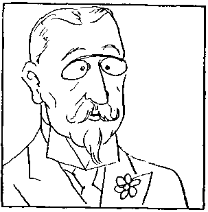
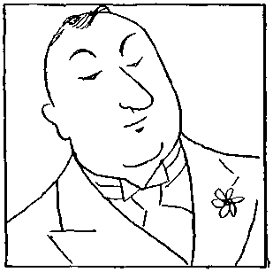
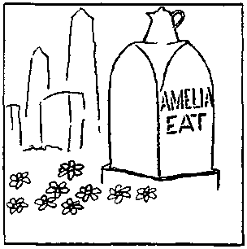

of the same demagnified seventeen
picture basilly, about times.
Through the kindness of the Mellon Institute we present Dr. Lovegerm, the eminent scientist, examining the deadly hocus-pocii bacilli. In the circle is a
Volume XVII Brooklyn, N.Y., Wednesday, September 23, 1936 Number 444
DEATHS from cancer have increased steadily since 1900. At that time 63 of every 100,000 persons died from that cause; the present death rate is 102 per 100,000. The rate of progress in the wrong direction has kept step steadily with the increased use of aluminum cooking utensils. Not everyone who uses aluminum gets cancer, of course, but all stand a chance of getting it.
The unseen guests at the aluminum dinner table
Readers will recall a reference to aluminum sardine containers. Well, they are beginning to produce results. In Erie, Pennsylvania, a painter who ate them for his lunch nearly died. One would suppose the government would do something about a thing like this. Instead of that, it is actually hostile to those who make known the naked truth on the subject. Its real sympathies are with the aluminum trust, not with the people. Fifteen of the largest sardine canners in Norway are packing their products in aluminum cans.
U. S. patent No. 2,027,270 claims that if edible crabs are dipped in an aqueous solution of aluminum, zinc or tin salts they can be canned without discoloration, which has previously hampered the canning of this type of crabmeat. It is a wonder that the brilliant minds who conceived the idea of feeding the public with food plated with aluminum, zinc or tin did not also suggest plating the food with arsenic, because that is a metal also.
A Florida subscriber writes:
A young man of thirty, a neighbor, said cigarettes were harmful to his health, so purchased a pipe with an aluminum stem. Several months passed, and, on mv inquiring about the family, a lady said, “Oh, don't you know, the son lias awful sores on his mouth and tongue. They are afraid it is cancer.” After nineteen months the young man died, his mouth, tongue and throat having been eaten away.
Unwilling to Be a Murderer
A. L. Butcher, of Tennessee, writes:
On Christmas eve some friends sent me a lot of jellies and jam, and one of the jars of blackberry jam was not labeled. Not thinking that homemade jam could have been made in aluminum vessels, I ate a lot of it, at 4:00 p.m.; and at 6:00 p.m. it grabbed me and I went to doctoring for what I knew was aluminum poisoning. At 2: 00 o’clock that night we called the doctor and he gave me a double-shot hypodermic. Then I developed the flu and pneumonia, which has probably ruined me for life. A few days ago my wife answered an advertisement, thinking that she might get an agency and sell some cooking utensils. The word aluminum was concealed. I told her I bet it was aluminum, and was fixing to write and ask them if such was the case, when the mailman brought their high-powered literature, and by careful examination I discovered that my suspicions were correct. I am writ-
ing this company telling them that I refuse to be a murderer or to sell anything made of aluminum that is used in connection with foods or drinks, that I am an invalid now from using food cooked in the stuff and have all the proof on earth to back it up.
Says Mrs. Answorth Rutherford, of Idaho:
A TESTIMONIAL ADVERTISEMENT
FOR OUR POISON-EVER ALUMINUM WARE
Mrs. Tupid heartily endorses our ‘ ‘ Poison-Ever ’ ’ aluminum ware, and that in the face of conclusive proof of its perilous nature. Mrs. Tupid, the mother of three lovely boys and two charming girls (four of whom are dead) will give little Leopold (still living) all the benefits the other four children have had. In honor of the occasion (the occasion of Leopold’s still being alive) we have presented Mrs. Tupid with a complete set of our matchless aluminum, so she can throw her old set away or give it to her mother-in-law, and do her best by little Leopold (still living).
Be like Mrs. Tupid. Is your family too large? A word to the wise is sufficient.
COUPON
For the next ten years we will give FREE a premium to each and all (or to his or her heirs) who have received the ultimate benefits of our aluminum cooking utensils an engraved name plate of pure aluminum, suitable for coffins, sarcophagi and the like. Free. If you have a complete line of our stuff, fill in the coupon below.
Name ...........................................................................
Address ...................................................................
The joys of being a mother
I think it only fitting that my husband and self should express our appreciation to you with reference to the following matter. Last May a Mr. West called at our camp and spent some time talking to Mr. Rutherford. In the course of conversation Mr. West remarked, ‘ ‘ Mr. Rutherford, are you troubled with stomach complaint ? ’ ’ When my husband replied that he had been ailing for five years or more and taking eitro-carbonates and other medicines to effect a cure, Mr. West remarked that he had noticed considerable aluminum ware in use in our kitchen, and then quoted increase in percentage of cancer since 1900, stating that stomach troubles and other diseases are all on the increase since the introduction of aluminum cooking utensils. I was away on a trip at the time Mr. West called, but on my return discarded all the aluminum ware and replaced it with heavj' white-lined enamel ware, deciding to test out the matter. It will soon be a year since Mr. West’s call, and I am most thankful to state that my husband’s health is vastly improved; he hardly ever takes any medicine, and his stomach very seldom distresses him. I have passed the information on to friends and you would be surprised at the number that have likewise discarded their aluminum ware and replaced it with harmless and sanitary ware.
Poisonings in Australia
Those interested in their fellow men and also those not interested in their fellow men but interested in the sale of aluminum cooking utensils will be interested in a group poisoning of seven harvesters, which took place on the property of Lander Brothers, Melrose Plains, twenty-five miles from Tullamore, Australia. The men had had a breakfast of porridge, milk and boiled eggs. Two hours afterward they all became so violently ill that they were unable to stand, and either collapsed where they stood or crawled over the ground moaning.
No matter what may be the outcome, it is the solemn determination of physicians, newspapermen and politicians that nothing shall be done to interfere with the dividends of the aluminum utensil companies. Every reader of The Golden Age knows what was the matter with those seven men.
The Negroes of central Africa, guided by their natural taste, will not touch food that has been cooked in aluminum utensils. Very likely, therefore, even the Bushmen would know better than to eat food thus cooked.
When She Saw
the Point
Minnie Spath, of Wisconsin, tells how she got her eyes open on a matter affecting the family health:
My son asked me to discard aluminum, and I said, “I cannot; it is all right; it cost too much to throw it away.” That was nine years ago. Then I got an aluminum cooker and drip coffeepot. My son looked pale; at times I could not eat, and if I did I was siek; still I could not imagine it was the aluminum, as a slip in the kettle when I bought it assured me that it was absolutely harmless. One morning my son said his mouth was raw, and, as I am a nurse, I gave him the idea that it was a feverish condition, but at noon my own mouth was so sore that it felt as if it had been scalded. I went home to treat it, and on the way in I saw The Golden Age in the mail. I glanced over it and saw the account of soldiers getting trench mouth from their aluminum canteens. That was enough; I saw the point. It was Saturday; the stores closed at four o ’clock; I had to go five miles by street car. I went in and said to the clerk, “I want some cooking utensils. ’ ’ She led me to the aluminum counter, and I said, “No, thank you; I don’t want to die yet.’’ So I got Vollrath ware, triple-coated white enamel. My son saw it at once on his return and said, “Good! at last you woke up; but why did you go in such haste?” I said, “Well, I have a sore mouth, too, and with only two of us in the house and both afflicted in the same way, it must be we were poisoned, and there is nothing else that could have done it.” Now we are both well and feel fine and thankful.
The peacetime maneuvers at Pine Camp, N. Y., where 120 men were made deathly ill by drinking lemonade carried in a can (probably made of aluminum), are said to have been the greatest peacetime maneuvers ever held by an American army. Seems as though, if they were that important, it was too bad somebody there did not take The Golden Age, so as to warn everybody against drinking lemonade kept in aluminum containers. Or doesn’t the poisoning of 120 men matter?
The aluminum trust is certainly on the job. A few weeks ago seventy inmates of the county jail at Los Angeles, where they use aluminum utensils, were suddenly made ill. The news was flashed over the radio, but not a word of it was in the “news” papers the next morning. That was fast work. The efficiency department will now realize that besides putting the silencer on the “news” papers, it is also necessary to control the radio stations.
Clever Sales Work
A dispatch from Pittsburgh, Pa., tells of the death of two little children and the serious illness of a third through eating cabbage impregnated with poison “absorbed from a metal container”. Fast and clever work. No wonder salesmen of aluminum cooking utensils make big money, when they can follow a succession of murders like that without ever leaving a clue. Other food poisonings are registered: Two little folks at Coney Island. This time it was “detectives who investigated”. Quite so! Since none of the great and learned medical health authorities ever would admit the truth, and thus far in ten years of investigation have never consented to the overwhelming evidence that use of aluminum utensils is the cause, it is best all round that detectives should do the investigating of these poisonings. Their guess is as good as that of the doctors, and it leaves a loophole for the flip-flop on this question which must come.
The Columbia (Pa.) News told of the serious poisoning of five Cordelia (Pa.) residents. The Garber family were poisoned by eating tripe boiled in vinegar in an aluminum container. It is a wonder they lived to tell the tale. The Guis-twite family prepared oysters in an aluminum pot “and some of the metal is believed to have been eaten from the container”. Of course it was, and that was what was the trouble.
In the near future a slick representative of the aluminum trust will call on the editor of the Columbia (Pa.) News, and he will learn that in this land of free speech and a free press nobody needs think he can come out and tell the truth on a thing like this without going to jail, or at least getting threats of it. Meantime the poisoning of the people goes merrily on.
At Grand Rapids, Michigan, a mother and three children ate chicken broth cooked in aluminum and nearly died. It was ten days before they were well enough to leave the hospital. The newspaper stories carefully concealed the fact that the food was cooked in aluminum. The most said was: “Samples of the broth will be examined Tuesday.” That is the end of it till the next poisoning; but in the meantime, of course, the “Health Hints” will boast repeatedly of how ‘safe and valuable’ aluminum is as a cooking utensil.
A picture of a corner of the White House kitchen reveals a row of aluminum pots and pans used for preparing food for the president, his family and his guests. It takes time for news to get around.
Sensitive to Aluminum Poisons
Says Mrs. Edward C. Morse, of New York:
I do not think I would have been alive today if I had kept on with my aluminum ware, I was having such awful spells with my stomach, once every day, and then two or three times a day. But I read the article in The Golden Age, stopped using the aluminum utensils, and after I got rid of the poison I began to get better. Now if I go anywhere to eat, and the food is cooked in aluminum utensils, I always have a bad attack with my stomach.
Mrs. Morse’s report is just one more of numerous similar statements received by The Golden Age, all proving the deleterious effects of aluminum upon the human organism. Like constipation, it is at the root of numerous and varied ailments.
Mrs. Ethel E. Bell, of Minnesota, writes that when she ditched her aluminum ware she lost her ‘‘sciatic rheuma
toid that their sterilizing machines should be made of aluminum in order to get the best results to keep the dental and surgical instruments sterile. Their sterilizers sold from $100 up per unit. I remember they put on quite a campaign to sell these new instruments, which were “perfect”. But, alas! they soon found that not only the instruments were affected, but the sterilizers themselves so contaminated everything therein that they were soon out of date. Of course, nothing could be said against aluminum, but today the Pelton & Crane Co.
tism”; also, she discovered that once again she could cook rice with lemon flavoring or sphaghetti with tomatoes without making the family ill. She is convinced that there is not one single thing about Satan’s kingdom that is right, not even its most-boasted cooking utensils.
The Findings of
Betts and Force
Many capable scientists in all parts of the world have made clear the dangers connected with the introduction into the human system of aluminum hydroxide, aluminum sulphate and aluminum chloride as obtained by the use of foods
“Shortening the milk supply ahead of time”
Aluminum Trust: It is unfortunate that, after I went to all the trouble to wean him or her from tin, enamelware and iron pots, this dreadful bologna bacillus should wreak such havoc with his or her various and sundry organs.
do not use it at any point where sterilization is desired.
Our principal chemical house is the Walding, Kinnan & Marvin Co. They were so pleased to find something in the way of noneorrosive scoops for medicines. Aluminum scoops were purchased. It was soon found that the aluminum seoops were being chemically acted upon in practically all the bins in which they had been placed. So, out went the scoops.
Dyeing houses thought it would be splendid to use aluminum vats for their immersion purposes. But the manufacturers of dyes soon found they did not get the same results when the dyeing was done in aluminum as that done in enamel. Consequently the warnings on dyes that aluminum
prepared or stored in aluminum utensils.
The two gentlemen to whom society owes much in this connection are Dr. C. T. Betts, 332 Superior’ St., Toledo, Ohio, and H. J. Force, Ph.G., 1724 Vine St., Scranton, Pa., the latter a chemist of world-wide reputation. Either of these gentlemen is pleased to communicate with any interested person on this subject so vital to human health.
The following paragraphs from Dr. Betts’ extensive researches and writings on aluminum have never before been presented to the readers of The Golden Age:
The Pelton & Crane Co. are the largest sterilizing-machine makers in America. Some years ago they were should not be used as receptacles for dyeing purposes. The American Radium Company of Chicago manufactured radium units to produce radio activity in drinking water. They were solicited by the aluminum interests to purchase their containers in which the radium jars were placed. While in Chicago recently the president heard my address before a medical association. He stated that more than 5,000 of those aluminum jars were replaced with glass, and showed me some of them cut in all angles. They had holes in them even under the surface, and some places as long as two or three inches. After they had been used for some little time the dissolution was of such a nature they would have leaks. This necessitated a new outfit or the replacement as he mentioned. Then he advised, after they had spent all that money for the aluminum containers, that he had every reason to believe the aluminum interests knew their material was not fit for the purpose at the time of purchase. To date we have not found one chemist who uses aluminum for any scientific purpose.
Aluminum Workers Live but Ten Years
Aluminum workers live but ten years. Writing on this point, Wm. II. Stow, pioneer, says:
A few years ago, while in Louisville, Kentucky, I was making a model and had some aluminum eastings made upon which I had to do considerable filing to get them down to proper shape. As it was very warm weather, I perspired freely, and after a few hours of work I became desperately ill with a headache. I was compelled to cease filing the castings and go to bed for a couple of days. When apparently well as ever, and not once thinking that the filing of the aluminum was the cause of my illness, I returned to my job, and in a remarkably short time was afflicted with the same trouble, only more severe than the first time. Then it dawned on me what was causing my illness. I junked the castings, and have never been bothered that way since. I quite agree with R. II. Barber’s article. I have been greatly afflicted with “athlete’s foot”, but did not know the cause. Before I had read the article two-thirds of the way through I knew what was causing my trouble, and I endorse every word as truth.
Said The Courier Mail, Brisbane, Queensland, Australia:
In October, 1934, complaints were received by the state secretary of the Australian Railways Union from fettler (shoveler) members stationed at Richmond, North Queensland, that they were experiencing a great deal of trouble with their hands, which they thought was caused by the metal T-piece of the shovel which was being supplied to fettlers by the department. The appearance of this T-piece suggested that it contained a fair quantity of lead, which would be liable to cause poisoning to injured hands. At the request of the union an analysis of the T-piece was made by an analyst and investigating chemist, in Brisbane, who certified that 92.16 percent consisted of aluminum, which was considered a dangerous ingredient. Advice has now been received that the Commissioner has decided that no more aluminum T-handles would be purchased for use in the railway service.
Mrs. Cyrus Lavey, of Michigan, cooked a soup bone in an aluminum kettle, let it stand until the next night, and then fed it to her dog. The dog was laid out for two or three days and in the meantime would not eat. She put water for the hens in an old iron sink and in an aluminum kettle. The hens drank from the water in the sink and would not touch that in the kettle. She thinks it hopeful that after a generation or so human folks may get to have as much sense as the dogs and hens. One sometimes doubts it.
The Washington Herald states that hot alum water is best to destroy ants and roaches. Put the alum in hot water, let boil till dissolved, and apply with a brush to all cracks where the insects are found. Alum water will destroy human pests, too.
The cartoonist thinks that, for the length of time this issue has been before the public, it is about time to add a new word to the dictionary. He suggests (Webster, please take note):
Aluminwmb': Adj. Derived from aluminum, a deadly cooking utensil; meaning, a state of impotence. Synonyms—poisoned, dead, corpsed, deceased, etc.; for instance: "He was aluminumb from the drink,” meaning it was fatal.
The Brugas Aluminum Murders
The Brugas aluminum murders attracted much attention in western Pennsylvania, but there was no reason why they should, for they followed the usual lines. Here are the facts: Mrs. George Brugas, Schwab Ave., Munhall Gardens, Pa., cooked beans, pickled cabbage and dumplings in aluminum cooking utensils. Alfred Brugas, 8, and his little sister Margaret, 2, died. They might have had a chance to live, but were rushed to the Homestead hospital, where most of the utensils were of the deathdealing aluminum variety. Edward Brugas, 6, survived.
The Pittsburgh Press, of the time, said in its headlines: “Third Poison Victim Fights with Death: Cooking Utensils Blamed in Munhall Mystery.” There followed the usual explanation: “Cooking utensils at the home of the parents, Mr. and Mrs. George Brugas, were taken to the coroner’s office yesterday for examination. It was believed the food the children ate was poisoned by one of the metal utensils m which cabbage was prepared. An autopsy revealed that Albert died from acute stomach inflammation.”
The Pittsburgh Post Gazette, the next day, reported that the county chemist “had found traces of a poisonous salt of nickel in food the children ate the night before they became ill”. The way the Pittsburgh Sun-Telegraph got the “news” to the public was in a headline reading: “Coroner Holds Weird Tragedy Which Struck Family After Meal Can Be Traced to Cabbage Container.”
IN HER LIFE
ALU
5. The Rev. I. Philpot Fuller, a sweet-scented hell-firer, who told beautiful lies about her and said something about there being a thief in paradise.
POPULAR
1. Hi Power, the craek salesman for the aluminum trust, found Miss Amelia Eat, young, healthy and happy. With all the abandon of his depraved nature he soon had her under his power. As a result she bought his complete line of "Poison-Ever" aluminum ware and settled down to cook some real meals for herself. Then he left her.
2. He had been gone only a few weeks when Doctor Dope, an A.M.A., entered her life. True, she had never before been interested in doctors, but she now felt, deep down in her viscera, that she couldn’t live without one. He soon revealed his true nature.
3. Without realizing what she was doing (or how fickle it looked) she ditched the doctor and was taken up by the local coroner, Mr. Proben Lye, an astute politician and a man who could keep a secret He kept hers. He said she had that beautiful pallor >ossible only to a harborer of the Hocus-3ocus Bacilli.
4. Still numb about what was going on around her, she suffered an undertaker, Mr. Plantum Deep, to become intimately acquainted with her, and, though he was very attentive (what with oodles of flowers for her) and her friends approved of him, she still had time to interest
6. After which, her parents, despairing of her ever getting anywhere by her Own efforts, made a deal for her with a cemetery lot salesman; but, being still dissatisfied, they made another with a tombstone capitalist.
7. And now—all’s well that ends well, aer they say—Amelia Eat, after all this, seems to have lost interest in men altogether and has gone into retirement.
Something had to be done in a hurry, and so the next day the Pittsburgh Press explained that the Aluminum Company of America had made a boost of five percent in wages and that “it was understood the reason for the ‘Christmas gift’ was the remarkable upturn in business, justifying it”. (The day previous the headlines of the same paper had said: “Nickel Poison Cause of Munhall Deaths: Utensil Contaminated Food, Coroner Declares.”) That is about all, except that the day after the announcement of the ‘Christmas gift’ the Pittsburgh Post Gazette said that “the coroner’s office was still puzzled over the case” and had “received for further analysis the utensils in which the fatal meal was cooked, including two aluminum pans and one of granite”.
My! that was a close call for the aluminum trust. The whole trouble for the trust in this instance was that the county chemist was probably an honest man. It was salts of aluminum that killed the children, and is killing the whole country, but the news must not get out. Meantime “health experts” are filling the papers and magazines with pictures and stories and lies of how supremely healthful aluminum utensils are. It is astonishing what a capacity the American people have for absorbing lies. And don’t the Big Business boys know it well?
Aluminum Trust Guilty of Two More Murders
All you have to do to make food poisonous is to let it stand long enough in the aluminum vessel in which it is cooked. With this preliminary information anybody except a hardware merchant, or a publisher of advertisements, or a member of the A.M.A. will understand fully the following skillfully worded dispatch:
Gulfport, Miss., June 26. (UP)—Bacterial poisoning from potatoes kept too long in a cooking utensil was blamed today for the death of two children, the critical condition of another, and minor illness of two older children and the father, Clarence Saucier. Two boys, 8 and 11, died in a hospital at Laurel, and a 3-year-old girl was not expected to live. Saucier and two daughters, 15 and 17, were slightly ill.
This dispatch appeared in the Miami (Fla.) Daily Tribune for June 27, under the headline “Bad Potatoes Kill Two Boys”. Is it not surprising how quickly and efficiently the trust gets on the job to cover up the truth in every one of these cases of aluminum poisoning? All that was necessary to conceal the truth was to use the word “bacterial” instead of the word “aluminum”, and the trick is done as neatly as any hangman ever tied a noose. But will those who arrange and support this diabolical propaganda to suppress the truth be able to answer to Almighty God for the suffering and misery of which they are the direct cause?
The wholesale poisoning at Indianapolis was a grand success. Out of 460 FERA workers 205 were knocked out. There was the usual “investigation” by a highly paid and inefficient staff, with no result of any value to anybody except the carefully covered statement regarding the tongue sandwiches that “the meat was packed early Thursday morning and was without refrigeration many hours before it was eaten”. Though not stated, what happened (as reported to The Golden Age by its own investigator) was that the meat was allowed to stand in aluminum containers. Shyly and modestly dodging the truth the newspaper account of the poisoning indicates that somebody had a hunch that even if aluminum is so grand to cook in, it is not so grand to let things stand in, and so the report concludes: “Yesterday’s lunch was served differently. None was packed, but the workers were brought back to the shelter house for their lunches.” Would you think it possible that the aluminum gang could be so cruel, or so efficient in keeping the truth hidden? Cooking food in aluminum is bad enough, but letting it stand in the aluminum after it has been prepared is nothing short of murderous.
Austin, Texas, will never learn why 100 students wTho ate their lunches in the school dining room were suddenly ill that afternoon. The school nurse declares that it was not the food, which is of the best. Without a doubt she told the truth. Again without a doubt the food, some of it, was cooked or stored, or both, in aluminum cooking utensils, and that is why Austin will never know the truth. The stranglehold of the aluminum trust on the newspapers and doctors and hardware dealers is too good, and too rigid, to let the facts on a case like this ever see daylight.
The Staphylococcus Aureus Flimflam
Dr. Betts, like Prof. Force and other honest professional men, long ago became weary of the efforts of the aluminum trust, and others working for them, to throw the blame for aluminum murders upon diminutive creatures: those little fellows of whom it is alleged,
'In Germany they call them germs, In Paris they call them parasites, And in Ireland they call them microbes.’
In a letter to the Camden Courier, Camden, N. J., dated January 15, 193G, Dr. Betts said:
One of your readers has forwarded a copy of your December 17 (1935) issue, which contains an article under the caption “Four More in Philadelphia Stricken by Pastry’’.
We thought probably you did not learn the cause of the extensive prevalent illness in Philadelphia: 147 fell ill after eating so-called “Boston Cream pie” and chocolate eclairs. Fortunately nene of them died.
of the same demagnified seventeen
picture basilly, about times.
Through the kindness of the Mellon Institute we present Dr. Lovegerm, the eminent scientist, examining the deadly hocus-pocii bacilli. In the circle is a
I wish to advise that the Department of Health officials in Philadelphia made an extensive investigation and came to the conclusion that a germ by the name of “staphylococcus aureus’ ’ was found which had been picked off a pimple on the neck of one of the employees of Mr. Ilaasis, secretary of the baking company. Five of his employees were sent to the hospital for contagious diseases. Four were told they did not have any contagious disease, but the fifth one had this pimple, which they felt needed attention, so the gentleman was confined in the institution for quite a period.
Extreme care was taken in securing a couple of these staphylococcus aureus germs which were pulled out of that pimple, and the investigators came to the conclusion that they were of the same family, either sisters or brothers, as those found in the eclairs which made the 147 ill.
It is reported that the filling with which the eclairs were made did not come in contact with human hands, that a gun was used for the purpose of squirting the filling into the pastry, but the operator admitted that he had possibly drawn his hand over the pimple on his neck and in that way a couple of the germs could have come in contact with the outside of the gun. Of course, people don’t know how fast these germs multiply, but it is assumed that they would do so rapidly, that one or two of them may have worked their way around, across or through the steel jacket gun so that a couple got into the filling at each squirt. In this way, the state officials now advise us, the eclairs were so poisoned that 147 persons were stricken.
Four days after the food poisoning epidemic you mention the fact that Mrs. Elizabeth M. Brown and her daughters Ethel and Emily and son Harry, of 6136 Wayne Avenue, fell victims to poisoning by eating a Boston Cream pie, but this time the symptoms were the same as those previously reported but the pie was made at the Germantown bakery. Investigation was at once made to find if one of their employees had a pimple, especially on the back of the neck. That seems to be the favorite residence of the staphylococcus aureus. No person having such a pimple was found. This is amazing, owing to the final decision of the state officials of Pennsylvania.
Reccntlj7 near Yonkers, N.Y., more than one thousand persons were similarly affected by food poisoning by the eating of eclairs and Boston Cream pic. It is a shame that the investigators, along with the state officials and government investigators, did not find any employee who had a pimple on the back of his neck.
Last fall another severe poisoning occurred at Pittsfield, Mass., and still another1 at Providence, R.I., where hundreds of other persons were severely poisoned, with the same symptoms as those noted at Philadelphia. In every case the health authorities looked for germs instead of mineral acid which is produced by aluminum cooking utensils. Now, as they have determined that these poisoning cases are due to pimples on the back of some employee’s neck, it is only right and just to presume that each of the bakeries from which these poisoned eclairs were sold employed persons with pimples all containing the terrible germ called “staphylococcus aureus ’ ’.
We maintain that the aluminum ware in which the filling was cooked and stored before making it into the pastry may have been the cause of the disease. If, however, such is not the case, it would seem a proper procedure to pass a law to execute all persons working in bakeries who have pimples.
Very truly yours,
C. T. Betts.
No Use to Investigate
An article in the New York American starts off in the old familiar style:
100 Vets Poisoned by Food; All Convalescing After Mystery. More than 100 World War veterans were reported convalescing yesterday after an attack of food poisoning at the United States Administration Facility at Northport, L. I.
Newspaper item: It seems that a distant relative of the cook, residing in Italy, had a wen on the underside of his cauliflower ear, said to be caused by the bite of the wild flim-flam; and that while sending a telegram to the cook of the “Little Ragweed’' tearoom he accidentally, or inadvertently, scratched the wen, and when the cook received the message he was stirring the cream-pie filler, and as he sneezed the germ (which had fallen off the relative’s ear in Rome and stuck to the cablegram) was blown off the message into the cream-pie filler. (Despite the fact that the message burned up the wires, the scientists claim it was not hot enough to kill the deadly flim-flam bacillus). The victims, a hundred of them, all died without knowing that the rare and deadly flim-flam germ caused their death. They thought it was the aluminum in which the cream-pie fiUer was allowed to stand.
The account says that three were so ill that a priest was summoned to give them the last rites, and then wound up in the orthodox manner by saying “laboratory tests were under way to determine what caused the illness”. Sure! Why not ? However, nothing will be learned, and nothing will be admitted; it never is. It is of no use to investigate, not a particle, because the investigators are positively determined that they will not learn that food cooked in aluminum is poisonous and food left standing in aluminum is even more poisonous. AH they have to do is to make a batch of lemonade and let it stand in an aluminum container for a while, then drink it and ring for the doctor. He would investigate, too, maybe, hut the result would be the same: a great mystery. An investigator who ignores conclusive evidence is worse than no investigator at all.
Under the heading “Lemonade Routs Pine Camp Guns” the New York Times has a five-column illustrated article setting forth that “Sickening of 120 Cannoneers Explains Retreat of Two Batteries from ‘Hill 300’.” After mentioning in the body of the article that “the batteries had brought lemonade in large cans with them” and that “the men actually went out of action faster than the umpires had been able to dub them ‘dead’ earlier in the day”, the following brilliant paragraph occurred:
Samples of the lemonade, together with the cans which contained it, and samples of the food the men ate, were sent to Madison Barracks Hospital, a regular army post near here, for analysis. But the lemonade was generally blamed, because even those who ate nothing but drank the lemonade were sick.
That is all, except that it is just possible that sometime within the next generation a report will come back from the high efficient head of the Madison Barracks Hospital that there was nothing wrong with the lemons, nothing wrong with the sugar, nothing wrong with the water, and there could not possibly be anything wrong with the aluminum cans in which the lemonade was contained, and therefore it is not now known, and never will be known, and nobody could possibly ever find out, why these 120 men were suddenly made deathly ill. And yet every reader of The Golden Age above five years of age understands the matter perfectly well. Is it not remarkable, the huge effort that grown men will make to avoid learning anything?
And how they do stand by past errors, even to the death!
The Walter Reed Hospital Poisoning
Fifty patients and three attendants at Walter Reed hospital, Washington, D.C., were poisoned from eating banana pie made of ripe fruit, allowed to stand over night in aluminum ware. There was the usual newspaper palaver about “officials were investigating”, “chemists will examine food samples,” and
“hospital authorities launched an immediate investigation to learn whether they were suffering from ptomaine from food, or whether some foreign substance had been mixed with the food”.
Of course, none of these brilliant men ever found anything, or ever, will, but if they will just go to the kitchen they will find that the hospital uses practically nothing but aluminum for cooking purposes, and thus everything is ready for another wholesale poisoning soon. Too bad doctors are so stubborn; but they are. But there are some honest doctors, too, who regret these wholesale aluminum poisonings.
Harry H. Teorizian, of California, states that in his youth, in Armenia, he was an eyewitness of the death of a fellow Armenian at the hands of a blind old Turkish priest. The priest, imbued with the idea that only by murdering an “infidel” could he go to heaven, stood on an elevated place, holding in his hand a hatchet, and crying louder and louder for a victim, until finally the Turks engaged in the massacre brought him an Armenian to be butchered. Mr. Teorizian has now become greatly interested in the subject of the wholesale poisoning of humanity by the use of aluminum utensils. He presents a new angle to this subject, which will be of interest to some.
For over a year I have been suffering from cancer of the stomach. When I read the articles “Sales Propaganda Keeps Millions Ill” I discovered the cause was aluminum ware. Today they are using mostly aluminum coils for beer taps; these are about fifty feet long. I had some stomach trouble before, but the climax came when I went into a beer joint and drank a large glass of beer. It made me sick right away, and so much so that a few days later I questioned the man who sold the beer to me. He was frank and told me the truth, that it was the last of the beer which was left in the coil, as he was waiting for a new barrel. But it was too late to make it right.
What can the people do? If compelled to cat and drink outside, how can they tell what utensils are used to cook with ? As for beer taps, the man who sells them told me that they use twice as many aluminum coils as they do block tin, because they are cheaper. Because I am interested in humanity, I handed those two articles “Sales Propaganda Keeps Millions Ill” to the superintendent of the hospital where I am being treated, and to some of the doctors and nurses who are attending me, because I noticed that the hospital uses all aluminum utensils; but they only laughed at me. I only wish that millions of people could read The Golden Age. They don 't know what they are missing. Thank God that the new Righteous Ruler, Christ Jesus, will soon take full power to reign in justice; that is our only hope. My greatest regret is that I am now no longer able to go out in the witness work; let this be my testimony, as a witness to the truth.
TN THE newspaper accounts of the whole-■T sale poisoning of Jehovah’s witnesses at Manchester, N.H., there was too much unanimity in the use of the word “accident”. In one of its headlines of the affair the Boston Daily Globe said, “Officials believe it an accident.” In the body of the story was the statement that the poisonings were believed to be due “to some accident in the preparation of the food”; also that the Manchester health officer “was convinced the affair was an accident”. In its news account the Boston Post said “the evidence indicated the stricken persons were victims of accidental food poisoning” and “Manchester police in their investigation have stated they believe that the food poisoning was accidental”. The Newark Evening News said, “Sheehan said he believed it was simply a case of accidental food poisoning and that no evidence had been found to indicate otherwise.” All right, Mr.
Sheehan, all right, but when the Aluminum Trust would like to see all of Jehovah's witnesses poisoned in one big group, and when the Roman Hierarchy would like the same thing, you cannot blame the witnesses for being suspicious when there is such a grand rush to make use of the -words “accident” and “accidental”. It may have been an accident on purpose. Ever hear of Borgia ?
“Military Order of Christ”
IT WILL be news to many that the Portuguese have what they call a “Military Order of Christ”, which order was conferred upon Laurence Vincent Benet, fifty-two years a machine gun expert in France. Benet was born at West Point, N.Y., U.S.A., and has spent a lifetime making weapons wherewith murderers could kill, blind and cripple one another.
Offsetting a Superstition
Learning Rapidly in California
THE case of the Nichols boy reminds me of the time I resided in Boston, Mass. I have five boys, and the three who were then of school age were required to be vaccinated before being allowed to continue their attendance at school. Now I was, and am still, very much opposed to the filthy and dangerous practice of vaccination. Fortunately I possessed a book of medical essays, written by the late Dr. T. R. Allison, of London, England, from whom I had learned of the dangers of vaccination, and this book told how to circumvent the law compelling obedience to the school board’s action, and I hand it on to your readers who may be placed in a similar quandary.
Have the doctor in one room to vaccinate the children, and have some person in the kitchen or bath room with plenty of hot water and a good woolen flannel, and as quickly as the doctor vaccinates the child, send him into the other room, and have hot fomentations applied to the wound until all matter is drawn out.
The vaccination will not “take” and no ill effects will result.
My wife and I had no further trouble from the authorities. They were satisfied and so was I, and the children continued their studies.— By F. W. G--- (Washington).
Trying to Convince McCann
John McCann, of 45 West End avenue, Newark, N.J., has nine healthy children and does not want them “immunized” with diphtheria serums at the parochial school which they attend. In sentencing this father to $50 fine or thirty days in jail for his refusal to have his 6-year-old son “immunized” the judge on the bench “cited a statement by Cardinal Hayes urging parents of New York school children to avail themselves of medical aid”. What “medical aid” has to do with diphtheria serum remains to be explained. At last accounts McCann was still unconvinced.
Death from Serum Disease
THE Ohio State Medical Journal has an article by Milton B. Cohen, M.D., of Cleveland, in which Dr. Cohen tells of a 13-year-old boy kicked on the shin by a horse. He was given several doses of anti-tetanus serum and died from the serum. He did not have tetanus.
IN California the State Board of Health learns rapidly. In the Weekly Bulletin of December 14 appeared the news that the only effective cauterization of animal bites is by fuming nitric acid, but admitted that in two cases where this method was used the patient had died in convulsions. The next issue stated that vaccination against canine rabies is in the experimental stage and no reliance should be placed in it; and that is probably the truth.
“Steer Clear of Vaccines”
Da. J. P. Leake, of the United States Public Health Service, renowned physician, authority on epidemics, advises parents to steer clear of vaccines for prevention of paralysis, for the good and sufficient reason, said he, “We have before us twelve cases where children vaccinated with infantile paralysis virus have been made victims of the disease against which the vaccine was to have immunized them.”
The Dead Twin
Francis A. Ellis, M.D., Baltimore, Md., in an article in the Journal of the American Medical Association, May, 1935, tells of an older brother, Joseph, vaccinated so he could go to school. From this vaccination two younger brothers, twins, became infected, and one of them died from eczema vaccinatum. It was Stanley that died. William also was very ill, but recovered.
Vaccination Persecutions in Quincy
TN Quincy, Mass., Mr. and Mrs. Harry E. -J- Childs, 193 Quincy avenue, were being maliciously arrested every seven days for failure to have their children vaccinated, with the threat that their two lovely children may be taken away from them. They are readers of The Golden Age, which may be the reason why they were persecuted.
Infantile Paralysis Vaccines
Dr. Thomas M. Rivers, virus research specialist of the Rockefeller Institute for Medical Research, in an address in St. Louis, condemned both the active Kolmer virus (already administered to 10,725 persons) and the inactive virus of Park and Brodie, saying: “I wouldn’t give a child of mine either vaccine, and I’d warn my neighbors not to give them to their children.”
SEIZING upon the fact that Pasteur was a Roman Catholic, and eager to get all the favorable publicity possible, the Roman Hierarchy is crazed with delight over the Warner Brothers’ picture ‘‘The Life of Louis Pasteur”. But here is what those truth-lovers, American Medical Liberty League, 35 East Van Buren St., Chicago, Ill., have to say about Louis Pasteur:
Hydrophobia is more of a mental hoax than a reality. If it were not for the money involved in that superstition it would have vanished long ago. Of course, blood poison may follow the bite of a dog. But it can also follow the bite of a man, or of a monkey, or of any other creature, if the teeth are soiled and leave sortie foreign substance in the blood stream.
Before the introduction of Pasteur’s treatment in France the death rate per year charged to hydrophobia was 30; after his treatment the yearly number increased to an average of 45. A few other figures show: At Zurich, of 233 persons bitten by rabid animals in 42 years, only four died. These figures are given by Thomas M. Dolan, L.R.C.P., in his book Rabies and Hydrophobia. Wendt, of Breslau, treated 106 persons bitten by mad animals between the years 1810 and 1823. Out of this number two died.
In contrast to this 1 might present several examples of the failure of Pasteur’s treatment. But only one will do. A French postman, named Pierre Rascol, and another man were bitten by a dog supposed to be mad. The postman was not bitten, but only scratched, for the teeth did not penetrate his clothing. The layman received several severe bites, but he refused to go to the Pasteur Institute and remained in perfect health. The postman, forced by postal authorities to undergo the treatment, did so, from the Sth to the 14th of March. On the 12th of April, following, severe symptoms set in, with pain at the points of inoculation, not the place of the bite, for the simple reason that he had never been bitten. On the 14th of April he died of paralytic hydrophobia, the new disease which Pasteur brought into the world. Is it any wonder that Professor Alichel Peter complained: “ M. Pasteur does not cure hydrophobia ; he gives it.” Much of this comes from E. Douglas Humes’ book, Bechamp or Pasteur?
Dr. Charles W. Dulles, late lecturer on history of medicine at the University of Pennsylvania, who was recognized as the greatest authority on hydrophobia in this country, if not in the world, studied the disease thirty years. In an address delivered in Washington in 1913, he said: “I might cite my own experience in the treatment of persons bitten by dogs supposed to be mad, which has furnished not a single case of the developed disease in thirty years. I have probably seen more cases of so-called ‘hydrophobia’ than any other medical man.”
Far from being the public benefactor that the film depicts him, Pasteur’s teachings have cost untold millions in health and they have destroyed unnumbered lives in the world. Pasteur was primarily interested in wealth and glory. He did sensational things to achieve this end. He was in the habit of making pro-nuneiamentos before he had proofs that he was right. Then he stuck to his dogmas despite all findings to the contrary.
In 1911 the state of Illinois spent $200,000 to investigate the milk question. The report proved from every angle that tuberculin testing of cattle is useless, dangerous and fraudulent. Also that Pasteurization of milk is only good to preserve it, but bad for the consumer. Instead of being guided by this report and abstaining from these fraudulent practices, the medics, led by Dr. W. A. Evans and his gang, had all copies of these records destroyed, and renewed their depredations against the dairies and the milk consumers.
Besides the experience in Illinois, a few years later, the United States Department of the Interior brought over an expert from Germany, a Professor Loenis, to work with Paul Hacker of that department and get at the facts in the tubercular and the tuberculin question. It was also established independently of, but similarly to, the Illinois report, that tuberculin testing of cattle is a gigantic fraud. But try to get copies of those reports now.
And so one more gasbag blows up.
Governments Frankly Getting Discouraged
^DHE governments constituting the League of Nations’ Permanent Central Opium Board are, frankly, getting discouraged. There was a sentence in their annual report stating that the 128,000 known addicts in the United States and Canada consumed about 17 tons of dope and yet the seizures for the two countries were only 791 pounds. This was deemed so discouraging that the sentence was omitted from the report.
Canceled $50,000 of Debts
r. M. M. Hursh, country physician of Cohasset, Minn., canceled $50,000 of debts owing him by citizens of the small community in which he lives, leaving $20,000 of more recent debts still on the books. It was a noble thing to do, and doubtless it was also wise, as it was a good advertisement.
Where Vaccination Is Not Required
ACCINATION is not required in the rural districts of New York, in parts of New
Jersey and Connecticut, in certain schools in Massachusetts, or at all in Maine or Vermont, yet in the year 1934 there was not a ease of smallpox anywhere in any of these states.
COMMON cotton has four “locks’' to the “boll”.
Some varieties have five locks to the boll. The cotton seed is covered with a thin, tough, black shell on which the “lint” forms or grows. Inside this outer covering is a thin, whitish lining. The seed kernel is a yellowish, oily substance surrounding the germ.
Cotton was “discovered” growing wild, and the natives picked out the seed and spun and wove the lint into cloth.
Eli Whitney invented the “gin”, a machine for separating the lint from the seed, and then the use of cotton became more general. Now the very finest of soft thread and cloth are made from cotton, some of it imitating wool and linen so closely that it can hardly be told from such except by an old-timer who knows what linen or wool really is. Also the wide range of uses for the lint extends to the strongest and heaviest cord and fabric. It is made into transparent paper, glue, high explosives, and many other things.
Cotton seed was considered worthless, and even as late as the beginning of the present century the bulk of it was thrown away. However, in the meantime, when drouth and famine had destroyed the grass and fodder and grain, and cattle were starving, it was found they would eat cotton seed. But it was not good food. They would soon “burn” out on it unless they had a good supply of grass or fodder or grain along with it. When fed to milch cows it spoiled the milk, and the butter was not fit to eat, being white and soft. But in such emergencies the cattle had to have something to eat, and so did the people, and, since there was a plentiful supply of cotton seed, it was used more or less.
Then the cotton-oil mill was invented, the cotton seed crushers began to organize, big business took hold, and cotton seed and its products began to be commercialized on a grand scale.
The cotton seed is put into the mill, and the outer “hull” is separated from the oily kernel. This kernel is ground into meal, put into an oven and heated, then into powerful presses which squeeze the oil out. The oil is “refined” and “treated” and becomes a substitute for many good things, such as linseed oil and even olive oil. Some of it is made into “cooking oil”, and it is the base for most of the “compounds” or (so called) “shortenings”, and even an expert can’t tell the difference. It takes an old-timer who really knows what olive oil is made of or where lard comes from to tell the difference.
When the oil is squeezed out the giant presses are opened and the residue is taken out in the form of a hard board. This is thrown into the crushers and ground into meal, and, mixed with the “hulls”, it at once becomes a “wonderful” stock food and is now widely used for such. Great quantities are used to feed dairy cows, and it has almost completely taken the place of other feed for fattening cattle for market. It “tests” “perfect” by the Bureau of Standards and is “approved” by the—approvers. The meat is soft, spongy, and flabby. Only an old-timer who knows what corned beef is made of really can tell what it is not.
And now the latest “development”, “creation of the laboratory” of the so-called “scientists", is “bread” “pastry” “delicacies” for table use. It is “supremely delightful”, “appetizing” and “nourishing”, and “is commended by the doctors” (of course) and “approved” by—the approvers.
The most enterprising bakery in a near-by Oklahoma town is the first to “introduce” the “new” food in this part of the country. A “write-up” (free advertisement) appears in a local paper, telling how the new food is being “featured” in all the leading hotels and at club dinners and teas, . . . and a modern expert of big business would not tell the difference between this stuff and food.
The fact is that cotton products are not food at all.
Cattle, sheep, goats and man are the only animals that will eat cotton-seed products, and then only if they are starving or it is worked off onto them in some form or combination.
The horse will not eat cotton seed.
Evidently that is where the saying “horse sense” came from.
Whole-Wheat Flour
CARD announces that whole-wheat flour can be obtained from the Russell-Miller
Milling Company, Grand Forks, N. Dak. Of course, it may be obtained from many other places also. There is no knowledge here as to prices.
lodine-Enriched Foods
TT HAS been discovered that feeding cattle and poultry with marine foods multiplies the amount of iodine in eggs and milk by about ten. A way to help goiter patients is indicated by this.
Light By Dr. William J. Hodge (Kentucky)
UNLIGHT is the ultimate source of vital energy. All life on our planet is dependent directly or indirectly on sunlight for the formation of its organic combinations. Plants, trees and their fruits are really stored-up sunshine. While the lowest species of organic life, such as fungi, are capable of developing in darkness, the higher plants, which principally support animal life, always depend upon the rays of the sun for assimilating the elements of the soil and atmosphere. They especially require the nonilluminating, ultraviolet rays of the sun, which we know to be most active in the production of electro-chemical effects. Likewise, the animal body is to a large extent directly dependent on sunlight for its growth and healthy development. It is a well-established fact that as a result of an insufficiency of sunlight the fibrin and the red blood corpuscles become diminished in quantity, while the white blood corpuscles are increased, causing a condition known as “leukemia”. A more or less continuous exclusion of sunlight induces severe forms of anemic diseases, especially if the diet is deficient in bloodbuilding elements.
The frequent exposure of the body to the sunlight will greatly assist the system in the performance of all its physiological functions. It will insure an even distribution of the blood. Such an adjustment of the circulation is necessary for the normal functioning of the organs and glands.
What is light? Light is a form of radiant energy which, acting upon the retina of the eye, gives us the visual sensation. How is light created? It is created by the rapid vibration of the particles of a luminous body. The sun is our chief source of light. Old Sol rises in the morning with a blaze of splendor, wakes the world, starts the wheels of industry and commerce on their daily grind and slowly wends his way across the broad expanse of the dome, and, in the evening, sets behind the western horizon in a blaze of glory which no artist can paint, tells the world goodnight, with plenty of sleep and rest until he greets you again with his glorious good morning. The sun’s rays are made of seven colors, red, orange, yellow, green, blue, indigo and violet. If all these rays were separated by a prism you would see the colors as in the rainbow.
Sunshine, and light as we know it, generated from an electric bulb, is composed of approximately 80 percent infrared rays, 13 percent visible rays, and 7 percent ultraviolet rays. Therefore with our natural eye we really see only 13 percent of the rays making up the ordinary white light.
Sunshine is conducive to life and health. It causes our fruits, vegetables and flowers to grow. In fact, our foods, for instance, apples, peaches and pears, are just packages of sunshine combined with mineral salts and water, with an outside covering decorated with the paintings of the divine finger; and how good they taste! Throw a board on the grass in your back yard and see how quickly the grass dies; and so it is with the human body when it does not have an adequate supply of light.
Light has become a recognized method in the treatment of disease.
Marvels of Surgery in New York and Atlanta
ON December 11 a 10-year-old boy was hit by an automobile and his brain exposed. On March 29 he walked out of the hospital on his own power, but will have to go back every day for some weeks to have the wound dressed. In Atlanta a 22-year-old Negro received an icepick wound in his heart. The wound was closed with three stitches in the left ventricle and eight in the pericardium and the man is reported recovering.
Eyelids for a Boy Born Without Them
BORN with his eyeballs normal but his eyelids permanently closed, John Groombridge, of England, six years of age, now sees perfectly. Surgeons grafted pieces of muscle from his thigh to his eyelids and now he is able to use them like any normal child.
Corneas from the Dead to the Living
AT Moscow in the past year there were 100 cases of grafting of corneas from the eyes of the dead to the eyes of the living but blind. Many of the patients upon whom this operation was performed are now able to read and work.
Blind from Birth, Now See
AT Newark, N.J., Frances Mydash, 24 years of age, and her brother Samuel, 7 years of age, were both born blind, but now they can see. The operations were performed by a Newark physician whose name is withheld.
A five-minute talk
by Judge Rutherford
SELFISH men, to sustain their wrongful position, often cite some scripture and wrongfully apply it. The judge of a high court recently decided that a Christian must obey every law of the land, and in supporting his position cited the words of Jesus, who said: ‘Render unto Caesar the things which belong to Caesar, and unto God the things which belong to God.’ (Luke 20: 25) Jesus was asked if it was proper to pay taxes to Caesar, that is, the state, and His answer was as above quoted. “Caesar” stands for the state or government, and it is the duty of all men to obey the law of the country in which they live which directs the doing of certain things in harmony with God’s law; and this rule is proved by the words of Jesus. Jehovah is supreme, and the first duty of every man is to obey God. When a person becomes the follower of Christ Jesus by agreeing to do the will of God, then he is duty-bound to render full obedience to the law of God. If the state has made a law that is in conflict with God’s law the Christian must obey God regardless of what the state may do to him. What, then, are the things which belong to the state? Among such things is the privilege of collecting taxes from the people to defray necessary expenses. Any law of this nature is right and proper. There are many other laws that the states make that are right and proper because in harmony with God's law. Every righteous law of man is covered by the law of God, which requires a man to do injury to no one, but to do good unto all as he may have opportunity.
What are the things which belong to God? Everything that God has commanded in His Word that man shall do. His first commandment is, “Thou shalt love the Lord thy God with all thy heart.” The second commandment is, “Thou shalt love thy neighbour as thyself”; and ‘upon these two commands’, Jesus declared, ‘hang all the law and the prophets.’ Jehovah is the Lifegiver to man, and if a man desires to live he must show his love for God by obeying His law. The law of God commands His witnesses that they must go about among the people and publish to them the truth concerning God and His kingdom. (Matthew 24:14) Shall this be done only by building houses and meeting in them and performing some ceremony? No, because Jesus and His apostles obeyed this law by going about from place to place as God commanded. All the true followers of Christ Jesus are commanded to do likewise. Suppose a man fails or refuses to obey this commandment of the Lord? The Scriptures declare that he thereby incurs the displeasure of God and that his end is destruction.
Some of the nations have made laws to the effect that the Christian must not go from place to place and advertise or preach the message of God’s kingdom. Such laws of the state are directly in conflict with God’s law. The Christian can be pleasing to God only by obeying His law. The state has no right to make and enforce a law that would interfere with the preaching of the gospel or the worshiping of Almighty God. The preaching of the gospel is for the good of the people and to the honor of Jehovah’s name, and is therefore always doing good.
Could not the Christian outwardly, and therefore apparently, render obedience unto the law of the state even though he does so with a mental reservation that he is not obeying the law of man? No; for the reason that such a course is hypocrisy and God hates a hypocrite. We are now in the days when God commands the Kingdom message to be boldly published, as is stated in 1 John 4:17. Because Jesus obeyed God in publishing the truth He suffered at the hands of the law officers of the world. His followers now must boldly follow in the footsteps of Christ Jesus by declaring the truth. In doing this the Christian cannot be rude, but he must be firm for God and His kingdom. If a man is always diligent in obeying God's law he cannot go wrong, because the law of God is perfect. We know that the law of man is imperfect. If the state makes a law the obeying of which causes men to sin, then the Christian has no choice. He must obey God. Concerning the nation or state that enforces laws contrary to God’s law, the Bible declares that such is wicked, and says: ‘The wicked shall be turned into destruction, and all the nations that forget God.’ (Psalm 9:17)
Only those who obey God will live for ever.
The fundamental laws of Great Britain and America recognize that the state or government has no right to force upon the people a religious ceremony. Now Rome, ambitious to rule the whole earth, and contrary to God’s law, attempts to compel the people to obey the rules and ceremonies of that religious organization that it may again set up the old Roman empire, which is against God and all righteousness.
[The interesting series of Bible talks of which the foregoing is one has been reproduced for the phonograph. These records may be run on the ordinary type of machine, and arc being widely used for passing important Bible truths on to others. The Watch Tower
Bible & Tract Society, 117 Adams St., Brooklyn, N.Y., are the distributors of these records, and any inquiries concerning them and the manner in which they are used should be addressed to them rather than to the office of The Golden Age.]
<<T)IGOTRY,” says the dictionary (F&W), “is obstinate and unreasoning attachment to a cause or creed.” The Roman Hierarchy is prone to employ this term with respect to anyone who ventures to take exception to any of its multitudinous doctrines and practices, on the basis that such are not in harmony with the teachings of the Scriptures. Obviously such a statement calling attention to the inharmony involves “reasoning”. The inharmony or contradiction is pointed out because the one doing so logically thinks that the practices and doctrines of professed Christians should be logically in harmony one with another, and, above all, with the teachings or truths of the Bible, which is the Word of God.
Yoohoo, Papa. Pst—your skirt, your skirt
In view of this fact, an honest critic could hardly be said to be a bigot, inasmuch as he advances his reasons for the position taken. A bigot, rather, is one who refuses to reason or to consider the necessity of trying the proofs in support of an accepted doctrine or viewpoint. So, may not the shoe be on the other foot? Is it not likely that “bigotry” is being manifested by those who so loudly call “Bigot” when anyone asks for proof of the truthfulness of their claims ?
Now, are Jehovah's witnesses to be called bigots for mentioning that the doctrine of “purgatory” has absolutely no support in the Scriptures? Is it not rather a commendable thing (if one may speak of commendation) for them to put forth an effort to lift this weight from the minds and hearts of sincere and honest Catholics? If they firmly believe that they have evidence that this doctrine was added to the Word of God, which makes it of no effect, is it not their duty to protest, and to bring forth their evidences? Who, then, are the bigots: those who present the simple truths, or those who adhere to their traditions and refuse to listen to the evidence which shows that such traditions make void the Word of God?
Judge Rutherford, as one of Jehovah’s witnesses, has conscientiously proclaimed the truth as it is given in God’s Word, the Bible, and has not hesitated to point out where popular beliefs anti theories are contradictory of the Bible. Is it wrong, for instance, for one to point out that ‘■(he things which the Gentiles [heathen] sacrifice, they sacrifice to devils, and not to God”? (1 Corinthians 10: 20) And, if there is a strong probability that the same thing is true of sacrifices made to escape torment in “purgatory”, must it not be told ?
Again, do not the members of the Hierarchy roundly condemn the Protestant denominations and others who differ with them? and do they not say that such are not churches, that Protestants and others who are not Catholics are not married unless they are married by a priest, and otherwise live in concubinage? It is futile for certain priests to deny this; for there are too many who have had this charge made against them. Of course, the Hierarchy has the right to express its opinions and to assume the responsibility for such statements before God. But when it tries to silence others by boycott, intimidation and even threats of violence, it is going too far, and exposes them to the charge of being super-bigots.
As the hunting season begins
Further, let not Protestants, or those who call themselves such, imagine for a moment that the Hierarchy will stop when (and if) it succeeds in silencing Judge Rutherford and Jehovah's witnesses generally. That would be only a beginning, dear, dull, stupid, guileless, silly “Protestants".
Protestanti*»?, as such, is quite dead, but there are millions who are not being deceived by the Hierarchy. Its past history will not down, and more recent events all confirm the conviction that it has not changed a bit, except that it has grown considerably more crafty.
But, suppose the Roman Hierarchy has been sadly misjudged by everybody. Suppose there is no one who really understands! Then, it would seem, all the more reason why the agents of the Hierarchy should agree to a debate, an open discussion of points of disagreement and supposed misunderstanding or claimed misrepresentation.
It is of no use to ignore differences, as the “good will” preachers of “three great faiths” are pretending to do. It is still less sportsmanlike to kill one’s opponent. The Hierarchy should get down from its high horse, and if it does think that it is so superior that it need discuss “nothing with nobody”, it would be wiser not to make this attitude too conspicuous in a free country where people may (for the most part) be more or less disinclined to let others do their thinking for them or permit their right to hear what they want to hear to be taken from them without a protest.
The Hierarchy, together with its “Protestant” auxiliary, the Federal Council of Churches, is not altogether oblivious to the necessity of at least appearing to be willing to “reason together”. Otherwise the fact that they are really super-bigots would be too manifest.
The Hierarchy, with the co-operation of laymen, is handing out what is called “Catholic Information”. Items so headed may be seen in the advertising columns of various newspapers. These items of “information” are persuasive and condescending.
The Federal Council, through its membership, is arranging for a nation-wide “Preaching Mission” from September to December of this year. In this way, it is hoped, some who have become indifferent to the defunct Protestant ecclesiastical organization may be revived somewhat. But Protestantism without a protest is a weak and ineffectual thing, and the people are looking for something more convincing than the hesitant and weak-kneed course which is followed by the professed Protestant ecclesiastical leaders.
The ringing protests against Roman superstition and tradition do not come from them today. It is rather honest people willing to face the facts that fling out their fearless challenge and call for an open and aboveboard debate on the vital questions that really concern the people.
There are millions of such sincere people of good will, many of whom, doubtless, are in some degree connected with the Catholic and Protestant organizations but hungering and thirsting for something more satisfying than the husks of tradition. It is such that gladly sign the petition now being circulated by Jehovah’s witnesses and others, though bigots and super-bigots can scarcely restrain themselves in their fury that intimidation, boycott and coercion are failing them in their attempt to suppress the open discussion of those things which the people realize are of vital interest and importance.
THE mere thought of placing Catholic dogmas and tenets before the limelight in public debate is driving some Catholic priests and dignitaries into a condition of panicky fear and abject terrorism. They quiver, shake and tremble as they consider what may happen to their cherished traditions and excre-tals. They will resort to any means to prevent it from coming to pass, and will violate any or all of the laws of God or man to accomplish their purpose.
Read the story of what happened to Mary Trotta, a Jehovah’s witness, on the 19th day of July, 1936, in the city of New York, in these United States of America.
‘ ‘ Spiritual lessons ’ ’ from the church of Saint Mary of Ivarskaya
Mary called at 346 East 9th street to secure signatures to a petition requesting a debate between some high official of the Catholic church and Judge Rutherford. On the first floor of the apartment the superintendent and a woman signed the petition. The wife would not sign. Others on the upper floors also signed and Mary rejoiced in the fact that so many were willing to hear both sides of the great issue discussed. In the meantime trouble was brewing. The villain in the person of a priest of the church St.
Mary of Ivarskaya, 67 East 7th street, called on the superintendent and was undoubtedly informed of the circulation of the petition. This priest is exceedingly secretive. To one person he revealed his name as “Father Eugene”. To others he denied that cognomen but refused to give any other. So for the purposes of this article he remains “Father Eugene”. “Father Eugene” was now full of wrath. Catholics had no business signing such petition, and no doubt the signers were impressed with visions of dire punishment coming upon them for this “mortal sin". Something had to be done, and a conspiracy was hatched to rectify the matter.
As Mary Trotta returned from her labors
she was met by the superintendent, w h o inquired solicitously if she had secured additional signers, and informed her that his wife was now ready to sign the petition. Gladly Mary went to his apartment and, the original sheet being filled with signatures, passed in a new page for the wife’s signature. She was asked for the full sheet. She declined. They argued and became vehement in their demands for it. They tried to grab it from her hands. Mary screamed and ran for the door, with the group like a pack of bloodhounds after her. She was thrown to the floor; the sheet of signatures was grabbed from her, and two of the signatures were erased.
For a minute she was stunned, and on coming to observed “Father Eugene”1 glowering at her. She rose, picked up her scattered papers, and was informed by this priest of Gog that she was not allowed to ask his people to sign such petition, and that he intended to report Rutherford and see that this work was stopped. Being reproached by her for permitting the mob to assault her he said he did not see anything. She informed him that she was going to report the matter, and left.
A committee from The Golden Age later called upon this “Father Eugene” for a statement concerning the affair. “Father Eugene” was very, very innocent. Yes, he remembered the occurrence. No, he didn’t see anything, because he was drinking coffee, with his back to the door. Still he knew that no assault had been committed. But he also knew that the papers had been snatched from her hand. He was very shrinking and modest about his name; declined to give it, and declined to divulge the name of the superintendent. He thought best that the whole matter be forgotten and that no trouble be stirred up about it.
The committee then called at 346 East 9th street, where inquiry was made for the superintendent. He was not in, and the lady who answered the door was not at all anxious to divulge his name. While the interview was proceeding, who should appear at the superintendent’s door but “his reverence” “Father Eugene”. He had been doing some fast thinking, and concluded it would be well to bolster up the defense by a call on the superintendent. It would be embarrassing if they were dragged into court and if their stories didn’t jibe; so “Father Eugene” in his haste walked right into the party.
One of the committee, whose heart burneth within him fiercely at the thought of injustice to God’s people, immediately addressed him, “Well, I thought this would be about what would happen, that you would be showing up around here about this time. This is all the information we need. I think we should go out and pull this whole joint, including this rooster that has just come in.”
And the committee departed, leaving a much frightened rooster behind them.
Craven fear of the truth inspired a conspiracy, deceit, falsehood, an assault, and an attempted theft. Craven fear of the truth has now developed into fright of what may happen to the conspirators for their wrongdoing.
There isn’t much crow left in “Father Eugene”.
What Has Happened in Pittsburgh?
WHAT has happened in Pittsburgh? The Pittsburgh Press carried a three-column illustrated story boasting that in the Allegheny General Hospital Allegheny metal, stainless steel, is used in all sinks, ranges, dishwashers, cook’s tables, utility tables, electric food carts, cabinets, cooking utensils, surgical instruments and equipment and sterilizing apparatus. Also, the same courageous paper advertises Better j\Iilk because coming in gleaming glass and stainless steel. 0 Andy, Andy! has it come to this? and is there now nobody in Pittsburgh even to come out and tell once again the old lie about what a “health” metal aluminum is?
“More Deaths from Cancer”
THE California state department of public health, Walter M. Dickie, M.D., director, in its Weekly Bulletin for May 9, 1936, says of cancel1:
“It affects fatally the stomach, liver and digestive tract more often than any other organs of the body. Half of all caneer deaths are in individuals whose cancer is located in such organs.”
One would think a deaf, dumb and blind man could see the cancer therefore comes from the man’s food, in some way, and that when millions charge it to aluminum cooking utensils, and savages are not affected, it is time to do some thinking.
America’s Deepest Chasm
AMERICA’S deepest chasm, the Snake river, between Bear mountain on the Oregon side and He Devil butte on the Idaho side, is 6,748 feet deep. The canyon at that point is 7.8 miles wide. A highway 24 miles long now takes the traveler to the edge of the canyon, hitherto unapproachable.
Aspirin—The Menace of Heart Disease
FEW people realize the growing menace to human life of heart disease, and that its importance as a public health problem is greater than that of smallpox, diphtheria, scarlet fever, cancer or tuberculosis. Heart disease has jumped from sixth to first place as a deathproducing disease since 1910.
During the eight years from 1917 to 1925, in the registration area of the United States, the population increased by about one-third, while the death rate from heart disease practically doubled, and the number of deaths reported where heart disease was a contributing factor increased 81 percent, although the number of deaths from all causes increased only about 14 percent.
Special reports obtained by the United States Public Health Service received from certain states, for 1928, with an aggregate population of approximately twenty-five millions, showed that 228 persons out of every 100,000 died from heart disease, as compared with 106 from kidney disease, 105 from cancer, and 100 from pneumonia. Thus it appears that heart disease destroys more human lives than both kidney disease and cancer combined, and more than two and one-fourth times that of pneumonia; and yet, kidney disease, cancer, and pneumonia are three great destroyers of human life. However, these figures do not tell the whole story, because the number of deaths from heart disease is decidedly on the increase, and has been since the beginning of the present century, as shown by each additional death report.
There is a cause for everything that exists; diversities occurring in mind or matter are not accidental, but the result of cause and effect. The rapid increase in the death rate from heart disease within recent years must be the result of some harmful practice more generally indulged in among the people. To discover and remove the cause is the logical remedy. Any assertion that this may be the result of modern living conditions is without foundation. Nor can it be attributed to improper diet. But it can be, and we believe properly so, at least in great part, attributed to the more general use among the people in recent years of some harmful drug, or drugs, which, because of a lack of knowledge of their harmful character, and unscrupulous advertising, has come into quite general use.
It has become a common practice among a great many people to make free and unstinted By Dr. H. C. Temple (Ohio) use of the drug called “aspirin”, as a cure-all for every ache or pain to which human flesh is heir. Aspirin ifc merely a commercial proprietary name for the U.S.P. Acetylsalicylic acid, by which it is extensively advertised to the public as a harmless drug that may be freely used with safety. Acetylsalicylic acid (aspirin) is classified in the general group of coal-tar products, or derivatives, such as acetanilide, anti-febrin, antipyrin, etc., well-known heart-depressants, which, if used at all, should be used with great care.
The physiological action of aspirin, or of any of this general group or class of drugs, is to reduce, or relax, arterial tension and weaken the contractility or elasticity of the muscular fibers of the heart. By the excessive and continuous use of aspirin, the heart muscles become soft and flabby, the heart valves relax and lose the power to properly perform their normal function, and by degrees the blood begins to regurgitate or flow back through the weakened heart-valves with each heart pulsation, thus gradually and unawares producing a valvular heart-lesion, which, when once established, is never cured, but continues to grow worse and worse until death results.
Acetylsalicylic acid, aspirin, is potentially a dangerous drug, and its unqualified use as a home remedy is a menace to good health, and should be discouraged.
WPA Malaria Control
A DISPATCH from Washington says that the WPA allotted $344,527 for malaria control in "Westchester county, $156,698 for White Plains, and $175,487 for Mount Vernon. Then the health authorities of all three places were mean enough, just at the opening of an election year, too, to say that they had not had a case of malaria in years. Don't those doctors know enough to keep still, when there is all that easy money in sight, and so near to New York city, too?
Looking Out for the Nickels
OOKING out for the nickels in these hard times, the county health officer of at least one West Virginia county writes to every new mother urging vaccination against diphtheria (probably with one of the newer toxoids, replacing the discarded toxin-antitoxin).
More Work for the Doctors
Mather Pfeiffenberger, M.D., president of the Illinois State Medical Society, in an address before the Annual Conference of Illinois Health Officers, made the extraordinary admissions that only 12 percent of all deaths are due to epidemics and epidemic infections and that this percentage is declining rapidly, that only 15 percent of all children would ever get diphtheria, even under epidemic conditions, but 100 percent are prospects for toxin-antitoxin (later abandoned for another serum) ; that the percentage who would get smallpox is even less, hut 100 percent are prospects for vaccination; that typhoid fever is disappearing, due to sanitation. In other words, the serum business is a racket, pure and simple.
Honey, Onion Juice and Lemons
A Nelson, New Jersey, reports getting good • results for a cold by slicing thin one Bermuda onion, adding five tablespoons of honey and the juice of a lemon and letting stand over night. Sounds as if it would taste good and be good.
Garlic for Tuberculosis
EXPERIMENTS indicate that virile bacilli of various kinds that can be killed only after three hours of boiling die after an hour of exposure to garlic fumes. Five hundred experiments suggest that garlic is desirable food for tuberculosis patients.
Preserved Blood in Chicago
FOR sudden use in blood transfusions Chicago will have a reservoir of canned blood similar to that maintained at Moscow. The blood is obtained from the bodies of medically unobjectionable suicides and others who met violent deaths.
Mustard Gas Blinds After 19 Years
IN Britain, and probably other countries, exsoldiers are going blind from the effects of mustard gas administered as long previously as nineteen years.
Wines Have Germicidal Effect
Dr. W. Dietze, German bacteriologist, reports that the acid content of certain wines has a germicidal effect, apart from the alcohol which the wine contains.
23,092 Sterilizations in U.S.A.
STERILIZATION of the insane and feebleminded is legal in 28 states, having been adopted first in 1907, in Indiana. California had sterilized 10,801 up to January 1, 1936, and all the other states put together, 12,291, making a total of 23,092 in the United States.
Hot Cinder Aids Sight Recovery
FOR twenty-two years blind in his right eye, the janitor of the Burlington (N.J.) courthouse got a hot cinder in it the other day, and, though it pained him much for a time, at the conclusion his sight in the injured eye was restored.
Paralysis Vaccine Dropped
GREAT discovery, a vaccine to cure infantile paralysis. Administered to 9,000 New York children; 12 cases of infantile paralysis developed; 6 of the children died; the vaccine was withdrawn.
People Who “Died Twice”
THE London News Chronicle tells of two per-J- sons in hospitals of that city, ‘restored to life’ by massaging the heart, who died “again”, one within ten hours and one within two hours of the time they first “died”.
Don't Take X Rays
ONE of the most famous doctors on the Pacific Coast urges that X rays be not taken, that they are destructive and sure to do harm to the grandchildren of those exposed to them.
The Hartman Desensitizer
THE Hartman desensitizer, one-half ounce of thymol, ethyl alcohol, sulphuric ether, makes possible the drilling of cavities in teeth without any pain to the patient.
In Case of Broken Hip
IN CASE of a broken hip a new surgical device keeps the leg muscles stretched out, so that there is almost no danger that on recovery one leg will be shorter than the other.
Wrap the Frozen Meat
IT IS recommended that meats to be frozen and afterwards used as fresh meats should be wrapped in waxed paper, to prevent evaporation.
A Scotsman’s Shoes
Uy W. G, Coble
IF YOU could make a pair of shoes outlast two or three pairs of leather soles, and each of these pairs of soles would outwear two or three of the best leather soles found on high-grade shoes, and at the same time look well, most of you would be glad to do it. Well, here’s how.
The uppers, toes, and soles of the shoes are treated differently. For the uppers a composition is made of three-fourths neat's-foot oil and one-fourth wool fat (lanolin) melted together. The toecap must be kept free from oil, as this part of the shoe is to be polished with some good shoe polish. Do this as the first thing. The soles are treated with petroleum jelly.
Use the oil for the uppers freely whenever an application is needed. Never let the leather get dry and stiff, as it will wrinkle and crack.
More time is required in the treatment of the soles. The soles must be heated in order for the petroleum jelly to penetrate. Care must be taken not to let the soles come in contact with anything hot, as it will ruin them. One good method is to expose the soles to the sun in a level position, so that the petroleum jelly, when melted, may penetrate and not run off. Spread a thick coat of the jelly on the soles; when this has been absorbed, repeat until the leather is fully saturated.
A pair of shoes thus treated will have in appearance a patent leather toe, and new, soft (velvet)-calf uppers. They will resist water and wear to a remarkable degree. The writer is wearing a pair of shoes that he has had for eight years. The uppers are checked but there are no cracks through the leather. These shoes have outlasted three pairs of soles. This would be hard to believe were it not told by a Scotsman who would believe it to be wrong to spend words to lie.
Rats and Men
ATS, and men, when fed on cereals, milk, milk products, legumes, root and leafy vegetables, fruits, with occasional eggs or meat, thrive and live happily together. Rats, and men, when fed on white bread, margarine, tea, boiled cabbage and potatoes, tinned meat and tinned jams, do not thrive and do not live happily together. The rats in the latter case become stunted and badly proportioned, with poor coats; they get nervous, bite the attendants, and by the sixtieth day begin to kill and eat one another.
America’s Food Supply Further Reduced
MERICA’S food supply has been further reduced. In a single month the Government food inspectors condemned 3,750 pounds of dirty walnut meats, 4,240 pounds of Brazil nuts, 244 barrels of chestnuts, 1,700 pounds of prunes, 15,750 pounds of dried peaches, 33,130 pounds of dates, 8G0 pounds of dirty butter, 1,200 pounds of decayed skim milk, 225 cases of rotten tomatoes, 960 cases of canned peas mixed with weevils, 26 barrels of diseased poultry, 110 pounds of dirty apple butter, 17,300 pounds of Limburger cheese that was more than putrid, 74 cases of canned tuna, and 18,500 cases of canned salmon. Also, the D. B. Scully Syrup Company, of Chicago, was fined $25 for shipping out apple butter that contained mouse and rat hairs, lead and arsenic. Let the good work go on.
Shopping Very Late Saturday Night
AWESTERN subscriber, shopping very late Saturday night, and looking ahead for the entire week, reports that for $10 a month she feeds three persons who have all the fresh fruits and vegetables they desire, a quart of milk a day at 8c a quart, meat three or four times a week, and all the cereals desired. Buying very late, the seconds that would spoil if carried over can be had at sacrifice prices, as grape fruit at 1c each, bananas at 2c a pound, and many good vegetables at less than half price, which nevertheless are good and wholesome food for the hungry.
Artichoke and “Purgatory” Rackets
OR years receivers of artichokes in New York were forced to sell exclusively to a combination of racketeers which resold vegetables at double the price. This racket has now been broken up. Now if Mayor La Guardia will tackle the “purgatory” racket, and do the same thing to that, he may well be made president.
The Black Tea Curse in Egypt
IN THE last twenty-five years the habit of boiling black tea, and drinking the heavy tannic mixture, has so enfeebled the fellahin of Egypt that it now takes twice as many men to hoe a field as it did when the evil habit began. Tea drinking becomes a narcotic evil of great magnitude.
New York State’s First Dust Storm
IT IS claimed by some that the plague of darkness upon Egypt, prior to the death of the firstborn, was accompanied by a terrible dust storm lasting three days, and it is interesting to note that only of late have dust storms been common in the United States. A dispatch from Middletown, Orange county, New York, from the heart of one of the finest agricultural and climatic districts of the whole country, states that a dust storm occurred there which, it was estimated, injured an onion crop over twelve square miles, doing damage to the amount of $200,000. Concerning the plague of darkness in Egypt, The Watchtower many years ago carried the following:
The physical basis of this miracle is thus stated: In April, about Easter, there begins in Egypt a period of fifty days called “Chemsim”, meaning fifty. During this period the south wind at times brings a storm of fine sand, which sometimes is terrible. Wherever the storm passes a crackling sound is heard, as of electric sparks. A nervous depression seizes mankind and domestic animals. This is the Egyptian darkness. Gicke says, “Artificial light at such times is of little use. The streets are practically emptied and a deep silence reigns everywhere.”
“The End of the World” in Kansas
MA. Stbege, pioneer, of Kansas, sends a • picture of a terrible dust storm, and writes concerning it:
I was out witnessing with a company of Jonadabs in the forenoon, and after dinner we had a meeting (a study) in a country schoolhouse; and as we were about to close our meeting (4: 30 o’clock) this storm eame up. Some started for home; most of us stayed at the schoolhouse. Just one car got home; those that didn’t surely had to stay right where it caught them. It got just as dark as pitch. Everyone took it cool, that is, those of us that were in the schoolhouse. But not so with those in Babylon. There was a funeral in one of the churches and the storm overtook them ■while in the church. The women and the kids began to yell and seream and one man said, “O my God; this is the end of the world.” We continue preaching the good news of Jehovah’s kingdom as the only remedy for the people’s ills and afflictions.
Dust Blown Two Thousand Miles
MOST of New England and some of New
York state was covered with dust particles from the Oklahoma sand storms late in February. Chemists estimated the dust deposits at ten tons per square mile.
What It Is Like to Be in a Dust Storm
A MOTORIST writes of his experiences in a dust storm while driving his automobile near Clayton, N. Mex.:
For 55 miles I raced the storm, seeing the ground around like the troubled surface of a volcanic pool. The storm caught me as I reached a ranch. I went into the ranch yard and stopped the car only six feet from a barn, but before I could dash through the door the wall of dust descended. I moistened my handkerchief and held it to my nose and eyes. I could not see my hand before my face. The dust sifted through the double walls of the barn, making the air seem almost unbreathable. It was like emery dust; and though the experience is now hours behind me, my lungs still ache. Frightened cattle bellowed and plunged in their stalls close by. Gradually the first stage of the storm passed, and I opened the door. After a time I could see the outline of the car, but it was two hours before I could see the ranch house, only 60 feet away.
Two Types of Dust Storms
THERE are two types of dust storms in western Kansas. The ground storms, blowing at 25 to 30 miles an hour are the worst; usually come from the north and last eight to ten hours; in two months this year there were 27 of these storms. One of these, lasting 25| hours, deposited two tons of silt on a space 26 by 62 feet. Visibility is limited to fifteen feet. Overhead storms ride at high altitudes, the dust settling on the ground. There were 22 of these storms. The two types together have left drifts of dust several feet high, sometimes to the tops of the fence posts. In some instances fields denuded show no trace of the crops originally planted in them. Subsequent rains in the eastern part of the state left Kansas as a whole in pretty good condition.
Sand Storms in Rome
SAND storms from the Sahara desert are not uncommon in Rome; and there was such a storm recently. The dust hid the dome of St. Peter’s from sight at midday, pedestrians were choked, traffic was slowed up, a high wind prevailed, and several were killed and injured by falling cornices and flowerpots.
Dust Storms Injured Health of Thousands
THE Public Health Service announced that the dust storms of 1934 are definitely proved to have injured the health of thousands. The finely divided silica was never intended for man to breathe.
Blaming It on the Lightning
BLAMING it on the lightning, the Keene
(N.H.) Evening Sentinel said of a flash which hit a farmhouse in the vicinity: "The flash struck a pole outside, progressed to the door, took off the hinges, entered the house, swept the pedestal from a table, up-ended a couch in the living room, broke most of the dishes in a cupboard, opened a closed Bible, moved a small heater stove, moved a refrigerator, broke many window panes, raised the bedroom floor, traveled out of the house from the back, entered the chicken house, put out the brooder fire, killed a number of chickens and completed its course outside by making a two-foot-square hole in the ground. The fop layer of a case of eggs was picked up and set beside the crate with only four eggs broken. The bottom of a covered dish was swept to the floor, while the cover remained in the cupboard. A vase on the piano (which was untouched) was hurled down behind the piano but unbroken. A glass cover over a collection of shells was smashed into powder. The bedroom floor when stood on afterwards behaved like India-rubber, so effectively had the ground below been loosened.” If that story is true, then truth, indeed, is stranger than fiction; and it probably is true.
Don’ts in an Electrical Storm
A N ELECTRICAL expert advises the following don’ts for safety from lightning in an electrical storm: Don't stand under a tree; don’t sit on a radiator or in a bathtub, or work about a stove, or use electrical appliances of any sort, or stand in front of a fireplace. The so-called “fat” lightning stroke seen in great storms is about four inches in diameter.
Benefit from a Lightning Stroke
A T Keyport, N. J., Mrs. Adeline Slover, suffering from arthritis, had not been able to dress herself for fifteen years. Struck by lightning, and thrown to the floor, she felt a great change in her blood stream, and discovered to her joy that she is now able to raise both hands above her head and dress herself.
A Dust Cloud Three Miles Thick
ARMY aviators in Texas found by flying through it and above it that a dust cloud which swept the state was 16,000 feet thick.
The Great Floods in the UJS.A.
^DHE great floods in the U.S.A, in the spring ■E of 1936 affected thirteen states seriously, causing 169 deaths, rendering 221,500 homeless, and doing damage to the extent of $271,500,000. Eleven of the flood-affected states were on the Atlantic seaboard, with the chain complete from Maine on the north to Georgia in the south.
In Cleaning Up Pittsburgh
TN CLEANING up Pittsburgh after the great flood, only employers and employees were permitted to drive into the city. All motorists except those on official business were compelled to remain two miles outside of the “Triangle” in which the bulk of the city’s business is transacted.
Mauna Loa on the Rampage
MAUNA LOA, Hawaii, is on the rampage. A slit two miles long appeared in the mountain side, whence issued five streams, one a mile wide. These streams of lava remain hot for a year. In many cases steaks have been cooked on lava a year old. The eruption of Mauna Loa, the greatest since 1855, was visible in Honolulu, 200 miles away. Inasmuch as a volcano is really nothing but a huge steam plant, the explosion was expected, and in fact was overdue.
The Quakes at Helena
THE earthquakes at Helena, Mont., over 800 of them, injured every building in the city, killed seven persons, caused mental derangements of three, frightened a dog and a cat to death, necessitated the abandonment of police headquarters four times, destroyed the college and hospital and three orphan homes, and threw hundreds of telephone receivers off the hooks. Deer, bears and wolves were tamed by fright.
35 Quakes a Day in Helena
IN Helena, Mont., in the twenty-one days beginning October 12, 728 earthquake shocks were experienced; damages to November 1 were around $3,000,000.
Sight Restored by Earthquake
THE nerves are strange things. In Toronto a woman blind for three years had her sight restored by the slight earthquake shock which recently visited American shores.
NO ONE in his right mind can contend with the truth that “the earth is [Jehovah’s], and the fulness thereof; the world, and they that dwell therein: for he hath founded it upon the seas, and established it upon the floods”.— Psalm 24:1, 2.
He made it, or as the above text puts it, He “founded” it, or “established” it, out of materials of His own provision, and therefore in the most absolute and perfect sense it is His very own property, and not that of any creature whatever.
He has, therefore, everything to say as to what may take place upon this earth, who may live upon it and who may not. “In him we live, and move, and have our being.” (Acts 17:28) Man may inquire of his Creator respecting what he must do if he would remain here and receive the blessings which the earth so bountifully bestows upon the sons of men.
That is a very interesting passage where Jehovah said to Abram: “In the fourth generation they shall come hither again; for the iniquity of the Amorites is not yet full.” (Genesis 15:16) The time would come when the Amorites would have worn out their privilege of living upon the earth and it would be perfectly proper that they be blotted out, but divine justice and wisdom and love would wait before the arm of power should strike them down.
An examination of the eighteenth chapter of Leviticus shows that the reason why the inhabitants of Canaan were blotted out was because of their improper relationships between men and their mothers, or stepmothers, or sisters, or half sisters, or granddaughters, or aunts, or nieces, or sisters-in-law, or women too closely related to each other, or the wives of others, or beasts, oi' men.
For all these abominations have the men of the land done, which were before you, and the land is defiled. Defile not ye yourselves in any of these things: for in all these the nations are defiled which I east out before you: and the land is defiled: therefore I do visit the iniquity thereof upon it, and the land itself vomit-eth out her inhabitants.—Leviticus 18: 27, 24, 25.
"God Is Not Mocked”
God’s laws are eternal, including those that are written into man’s very being, and therefore it is very much to the point when the apostle says: “Be not deceived; God is not mocked: for whatsoever a man soweth, that shall he also reap.” (Galatians 6:7) These men knew they were doing wrong; it was written in their very beings; therefore, when their iniquity had come to the full, the land vomited them out.
At various times and places Jehovah God gave instructions to the Israelites that they were to destroy sacrificers unto false gods (Exodus 22: 20; Deuteronomy 7:1, 2), every living thing in the cities of Sihon king of Heshbon, and of Og king of Bashan, excepting the cattle (Deuteronomy 2: 34; 3:6); every living thing, including the cattle, and the cities themselves, where the whole city had gone over to idolatry, and such cities must not be rebuilt (Deuteronomy 13:12-16); every living thing of the Ama-lekites, both man and woman, infant and suckling, ox and sheep, camel and ass (1 Samuel 15: 3). In certain instances the women, and the little ones, and the cattle, might be spared in the day of battle:
But of the cities of these people, which [Jehovah] thy God doth give thee for an inheritance, thou shaft save alive nothing that breatheth: but thou shalt utterly destroy them; namely, the Hittites, and the Amorites, the Canaanites, and the Perizzites, the Hi-vites, and the Jebusites; as [Jehovah] thy God hath commanded thee: that they teach you not to do after all their abominations, which they have done unto their gods; so should ye sin against [Jehovah] your God.—Deuteronomy 20:16-18.
Joshua Was Obedient
Joshua was obedient to the commands of the Most High God, ruler of heaven and earth, and if you read the tenth and eleventh chapters of Joshua you can see for yourself how, one after another, Makkedah, Lachish, Eglon, Debir and Hazor were utterly destroyed. The story of Hazor reads:
And Joshua at that time turned back, and took Hazor, and smote the king thereof with the sword: for Hazor beforetime was the head of all those kingdoms. And they smote all the souls that were therein with the edge of the sword, utterly destroying them: there was not any left to breathe: and he burnt Razor with fire.—Joshua 11:10,11.
The last three chapters of Judges contain an interesting account of the circumstances w’here an unfaithful woman suffered death at the hands of men of the city of Gibeah, Benjamites, who were worse than herself. Divine justice declared that all Israel must arise and destroy all the cities of Benjamin, and this was done, but 600 Benjamites remained alive, in their stronghold in the wilderness.
The account shows that at every step inquiry was made of Jehovah God as to what to do. In
the end it was learned that the city of Jabesh-Gilcad alone had failed to respond to the divine call to act as executioners. That city itself was destroyed, and its 400 virgins were mated to that many of the Benjamites that remained alive. It is all a nice study in retributive justice, and is instructive, to those who wish to learn.
“Devoted.” and “Accursed”
It hardly seems necessary to state that anything that is devoted to Jehovah belongs to Him thereafter, to do with it as He wills. But the commandment on this is explicit:
No devoted thing that a man shall devote unto [Jehovah] of all that he hath, both of man and beast, and of the field of his possession, shall be sold or redeemed: every devoted thing is most holy unto [Jehovah],—Leviticus 27: 28.
In the Hebrew the word for “accursed” is the same as for “devoted”, and in the following passage, giving instructions as to the fate of the city of Jericho, the word rendered “accursed” could as well be rendered “devoted” and in some respects the thought would be more clear; that is, because Jehovah’s name is involved, the things of the city were devoted to Him. And because they had been contaminated none might use them; they must be destroyed.
And the city shall be accursed, even it, and all that are therein, to [Jehovah] ■ only Rahab the harlot shall live, she and all that are with her in the house, because she hid the messengers that we sent. And ye, in any vise keep yourselves from the accursed thing, lest ye make yourselves accursed, when ye take of the accursed thing, and make the camp of Israel a curse, and trouble it. But all the silver, and gold, and vessels of brass and iron, are consecrated unto [Jehovah] ; they shall come into the treasury of [Jehovah].—Joshua 6:17-19.
In the taking of the city of Jericho, Jehovah’s commandments were observed to the letter, except by one man; but such is the perversity of man in his fallen state that, despite the explicit instructions to the contrary, one of the Hebrew warriors disobeyed and took for himself that which had been devoted to Jehovah God; and because he disobeyed, the whole camp was in turmoil; in the next city assaulted thirty-six of their own men seem to have been slain or rendered hors de combat and about 3,000 more put to flight. Read the story itself:
Achan Disobeys and Robs Jehovah God
But the children of Israel committed a trespass in the accursed thing: for Achan, the son of Carmi, the son of Zabdi, the son of Zerah, of the tribe of Judah, took of the accursed thing: and the anger of [Jehovah] was kindled against the children of Israel.
And Joshua sent men from Jericho to Ai, which is beside Beth-aven, on the east side of Beth-el, and spake unto them, saying, Go up and view the country. And the men went up and viewed Ai. And they returned to Joshua, and said unto him, Let not all the people go up; but let about two or three thousand men go up and smite Ai; and make not all the people to labour thither; for they are but few. So there went up thither of the people about three thousand men: and they fled before the men of Ai. And the men of Ai smote of them about thirty and six men: for they chased them from before the gate even unto Shebarim, and smote them in the going down: wherefore the hearts of the people melted, and became as water.
And Joshua rent his clothes, and fell to the earth upon his face before the ark of [Jehovah] until the eventide, he and the elders of Israel, and put dust upon their heads. And Joshua said, Alas! O Lord [Jehovah], wherefore hast thou at all brought this people over Jordan, to deliver us into the hand of the Amorites, to destroy us? Would to God we had been content, and dwelt on the other side Jordan! O Lord, what shall I say, when Israel turneth their backs before their enemies! For the Canaanites, and all the inhabitants of the land, shall hear of it, and shall environ us round, and cut off our name from the earth: and what wilt thou do unto thy great name?
And [Jehovah] said unto Joshua, Get thee up; wherefore best thou thus upon thy face? Israel hath sinned, and they have also transgressed my covenant which I commanded them: for they have even taken of the accursed thing, and have also stolen, and dissembled also, and they have put it even among their own stuff. Therefore the children of Israel could not stand before their enemies, but turned their backs before their enemies, because they were accursed: neither will I be with you any more, except ye destroy the accursed from among you. Up, sanctify the people, and say, Sanctify yourselves against to morrow7: for thus saith [Jehovah] God of Israel, There is an accursed thing in the midst of thee, O Israel: thou eanst not stand before thine enemies, until ye take aw7ay the accursed thing from among you. In the morning therefore ye shall be brought according to your tribes: and it shall be, that the tribe which [Jehovah] taketh shall come according to the families thereof; and the family which [Jehovah] shall take shall come by households; and the household which [Jehovah] shall take shall come man by man. And it shall be, that he that is taken with the accursed thing shall be burnt with fire, he and all that he hath: because he hath transgressed the covenant of [Jehovah], and because he hath wrought folly in Israel.
So Joshua rose up early in the morning, and brought Israel by their tribes; and the tribe of Judah was taken: and he brought the family of Judah; and he took the family of the Zarhites: and he brought the family of the Zarhites man by man; and Zabdi was taken: and he brought his household man by man; and Aehan, the son of Carmi, the son of Zabdi, the son of Zerah, of the tribe of Judah, was taken.
And Joshua said unto Aehan, My son, give, I pray thee, glory to [Jehovah] God of Israel, and make confession unto him; and tell me now what thou hast done; hide it not from me. And Aehan answered Joshua, and said, Indeed I have sinned against [Jehovah] God of Israel, and thus and thus have I done: when I saw among the spoils a goodly Babylonish garment, and two hundred shekels of silver, and a wedge of gold of fifty shekels weight, then I coveted them, and took them; and, behold, they arc hid in the earth in the midst of my tent, and the silver under it.
So Joshua sent messengers, and they ran unto the tent; and, behold, it was hid in his tent, and the silver under it. And they took them out of the midst of the tent, and brought them unto Joshua, and unto all the children of Israel, and laid them out before [Jehovah]. And Joshua, and all Israel with him, took Aehan the son of Zerah, and the silver, and the garment, and the wedge of gold, and his sons, and his daughters, and his oxen, and his asses, and his sheep, and his tent, and all that he had: and they brought them unto the valley of Achor. And Joshua said, Why hast thou troubled us? [Jehovah] shall trouble thee this day. And all Israel stoned him with stones, and burned them with fire, after they had stoned them with stones. And they raised over him a great heap of stones unto this day. So [Jehovah] turned from the fierceness of his anger. Wherefore the name of that place was called, The valley of Achor, unto this day. —Joshua 7.
IN 1933, when Elgin (Illinois) distinguished itself among those of the Equus asinus brotherhood by throwing into jail a large number of Jehovah’s witnesses, it was freely admitted by officers that the preachers of the city instigated the assault. Humiliated and shamed by the exposure of their inquisition, the officials of Elgin have refrained from such Jesuitical tactics since that day, until July 26 of this year.
On July 26 Officers Harley Johnson and Stadler of the Elgin radio squad saw Robert Stitch, one of Jehovah’s witnesses, presenting the Kingdom message from a sound car. Elgin has no law against operation of sound machines. Eut this car bore the title “Jehovah’s witnesses”. That was enough for these duennas of the law. Weren’t Jehovah’s witnesses the ones the preachers were after? Hadn’t they been in trouble in Elgin before? Sure thing. Run ’em in and lock ’em up. Thereupon Robert Stitch aforesaid was taken into custody, thrown into a cell, and held in durance vile for twenty-four hours.
But now these zealous beadles found themselves in difficulty. What charge could they bring against the prisoner? That little item had been overlooked. No sound ordinance. No chance to charge him with peddling. This required thought, something not ordinarily indulged in by Elgin policemen. With brain cells fairly cracking under the strain they searched through the ordinance book for a law to uphold their misdeeds. At last diligence had its reward. An ordinance was found, and this, dearly beloveds, is what Robert Stitch was charged with violating:
It shall be unlawful for any person to operate or park on any street any vehicle for the primary purpose of displaying advertising, without first obtaining a permit therefor from the chief of police.
In due time a trial was held, in which Officer Harley Johnson was one of the star witnesses for the prosecution. Mr. Johnson remembered clearly seeing the car with a “ Jehovah sign” on it. He didn’t know what “Jehovah’s witnesses” meant, and was completely devoid of any information as to the meaning of the word “Jehovah”. Nevertheless the jury, if not impressed with the brilliancy of Officer Johnson’s intellect, felt that his labors ought to be rewarded, and found the defendant guilty. This means that, unless a higher court sets aside the sentence, Robert Stitch can spend ten days in jail for the crime of driving an automobile in Elgin with the words “Jehovah’s witnesses” printed thereon.
Surely the preachers and police of Elgin are entitled to positions of great honor in the longeared fraternity.
A Sword in Texas Skies
ALESTINE, Texas, reports having seen in the heavens, at night, a sword-shaped shaft of light, with the hilt of the sword almost as plain as the blade. At the time seen, November 24, no comet was due in the heavens.
No. 419 - October 9, 1935
The Holy ( ?) Roman Empire Revived .... 3
Mistreatment of Fleshly Israel
No. 420 • October 23, 1935
Associated Press Cowardly and Unfair _. 35
Jefferson. Hamilton, or Ratti?
Sound Car Witnessing^ near Washington 50
Mobilization for Catholic Action .....
‘‘Every Man by His Own Standard” ....59 Badiv Tangled at Huntington, Ind
A Crime Bill of $14,000,000,000
No. 421 - November 6, 1935
Many Editors Arc for the People
Associated Press Against the People .... 71
Cardinal O'Connell Unconvinced
It Garbles Facts and Deceives People 80-81 The Business of Telling the Truth
Attempts to Raise Needed Revenue
The Knowledge and Vindication of God’s Name
The Partnership Between Pope and Duce 95
No. 422 - November 20, 1935
An Open Letter to The Associated Press 99
Further Expressions on Flag Saluting .. 101 “A Tyrannical, Outrageous Law”
Destruction of American Government .... 105
Fascism an Instrument of Koine
“Kingdom Blessings for the People” .... 114
Tenets of Roman Catholic Fascism
The Italian-Ethiopian Travesty
Roman Cu’t • i Accord with Mussolini .... 127
No. -’23 - December 4, 1935
Teaching to Serve God, or Mammon? .... 131 “The Spirit of ’36”
Margiotti Has the Bull by the Tail .. 136
The Whooping Cough Vaccine Racket .. 141
Took The Golden Age Under Protest .... 146
Broadcasting the Truth in Australia .... 147
Obedience Brings Visions of God’s Son 156
No. 424 • December 18, 1935
Fascism (Catholic Action—the
Wrath upon All “Desirable Banners” 167
Catholic Action Four Centuries Ago
Fascism America’s New “Religion”
No. 425 • January 1, 1936
Roman Catholic Watch Tower in Northern Rhodesia
An Open Letter to the Alison Russell Commission
The Rhodesias—From 193G Year Book of Jehovah’s witnesses
Au Open Letter to Southern Rhodesia's Prime Minister
Jehovah’s witnesses’ Watch Tower ....204
Pathetic Letter from One Oppressed ....215
Why World Powers Are Tottering
No. 426 • January 15, 1936
Is Taking Medicine Unscriptural?
A Letter to the Lancaster School
Roman Catholic Fascism
Advertise Jehovah’s King and Kingdom 240 The Bible
“Nearly if Not Entirely-Secret”
No. 427 - January 29, 1936
Catholic Action in Irvington, N.J
American Civil Liberties Union
Jehovah’s witnesses Protest
Oliver Forum Resolutions Condemning
Unchristian Policy of Canadian Priests 268 Instructions at the Red Mass
Golden A(je Receives Miraculous Medal 270 Come and Witness Zeal for Jehovah .... 272 Jesus
Report of Persecutions in Germany
Obedience Turns Outcast into a Son .... 284
No. 428 • February 12, 1936 Condensations of Canadian News
God’s Providences in New Zealand
Jehovah’s witnesses in Germany
Italians Control "Last Consistory”
Spiritism in Congregational Pulpit
No. 429 - February 26, 1936
America Scorns Jesuit Insults to the Stars and Stripes
Jesuits Beaten Before They Start
Jehovah's witnesses in Fiji, etc
Unholy Roman Empire vs.
Business of the New York Journalist .... 342 Time Grovels Before the Hierarchy
With Justice and Brass Knuckles
No. 430 - March 11, 1936
Riches—A Sure Guide to
Irvington Inquisition Marches On
Jesuitism in the Land of Liberty
The Tool of the Jesuits
Jehovah’s witnesses in Germany,
Commemorating the Lord’s Death 379
No. 431 - March 25, 1936
The World-wide Assembly of February 23, 1930
The Convention in Great Britain
Witness Work at International Conv'n 402
Interesting Letters from Abroad
Radiograms—Cablegrams—Telegrams .. 405
No. 432 * April 8, 1936
Jehovah’s witnesses in Germany
Protestantism Destroyed in the Land of Luther
Persecutions of Fleshly Israel
Terrible Breakdown in Morality
So. Dakotan Writes Judge Rutherford 434
Obeisance to the Pope in Griffin, Ga
New Jersey Courts of Peculiarity
Obedience Retains the Heavenly Favor 444
No. 433 - April 22, 1936
Interviewing the Secretary’s Secretary 453
Pouring Billions into the Rathole
Boland, O’Connor, Coughlin, Sweeney .. 460
Australasian Report to Judge Rutherford 466
Amusing Case in Geelong, Australia .... 467
William Raises 50c and Nether Regions 469
God's Vindication in Man’s Salvation .. 475
No. 434 - May 6, 1936
Flag Saluting in Theory and Practice .... 483
Protest to New Jersey Legislature
Legal Light on Flag Saluting Bills
Flag Saluting iu Florida Courthouse .... 493
For Proclaiming the Truth at
Judge Rutherford Heard in Albania .... 498
Belated Reports of Great Broadcast .... 499
Jehovah’s witnesses Smile at Critics .... 500
A Fine Time at St. Augustine ...
Jw’s in German Concentration Camps .. 503
Disobedience Reverses Creative Process 507
No. 435 • May 20, 1936
Rome Controls San Diego Exposition .... 530
The Vomitus of Belchertown, Mass
Responsibilities of Pedestrians
The End of the Ten Commandments .... 539
No. 436 - June 3, 1936
Philistia (Catholic Action] a Murderess for 1500 Years (Part 1)
Blessing Instruments of Murder
Hierarchy Double-crosses League
Rebuilding “Holy” Roman Empire .... 550
The Superpatriots of Massachusetts .... 562
From Texas Declaration of Independence 568
To City Commissioners of Lindsay
Disobedience Brings Disappointment .... 572
No. 437 - June 17, 1935
Philistia a Murderess (Part 2)
A Pictorial Visit to Vatican City
Shocking the Religious Susceptibilities
Expelled from Home for Loyalty to God 594 Halliburton’s Idea of Justice
jw Stand on Flag Saluting Right
Maryland Still Ilas Some Liberty
The Transfiguration and Vindication .. 604 A New Who’s Who
No. 438 * July 1, 1936
Pbilistia a Murderess (Part 3)
In the Good Shepherd’s Orphanage
Two Kind Nuns, Forty Hypocrites
Broadcasting the Truth in Singapore .... 634
Canada’s Reindeer Herd Thriving
No. 439 • July 15, 1936
Will Roosevelt Support the Roman Hierarchy
An Important Interview with Judge Rutherford
Haters of God in Germany, Quebec and New Jersey
Roman Catholic Hierarchy in Quebec .... 654
Atrocities of “Jersey Justice” (1)
Prima Facie Evidence of Conspiracy 669
Judge De Meza’s Responsibility
No. 440 - July 29, 1936
A Petition that the Bible Be Not Boycotted in America
The League of Nations—Its Failure .... 678
Atrocities of “Jersey Justice” (2)
Captain Rowland of Asbury Park .... 680
Oakland, Ocean Grove, Paterson
Jehovah’s witnesses in Nigeria
Roman Hierarchy and the Children
Thorns in the Side of Roseland, N.J
Society Denies Blame in Rhodesia
Transcription Work in Queensland
Disobedience Vitally Affects God’s Gift 700
No. 441 - August 12, 1936
International Murderers—The SuperGangsters of “Christendom”
The “New Deal” in Great Britain .... 715
Will the Roman Hierarchy Debate?
Giving Testimony ......................................
Exciting Times in Irish Free State
“Jehovah’s witnesses,” in
The Devil Getting Sore, in Nova Scotia 728 It Paid Ralph Conner to Be Patriotic 728 The Lord Willingdon Decrees of India 729 Poor Little Hyderabad Kid ....................729
Fortifications on Saipan and Palau .... 735
No. 442 • August 26, 1936
Jehovah’s witnesses Sue Jehovah's Slanderers
Statement of Claim in District Court of the United States, Eastern District of Pennsylvania
Statement of Claim in Court of Common Pleas of Philadelphia County 746
Legal Vindication Against Intolerance 752
Jehovah’s Slanderers vs. Jehovah’s witnesses
Disobedience Nullifies Liberality and Worship
No. 443 - September 9,1936 International Murderers—The SuperGangsters of “Christendom” (2) ..771 Debunking the lieroes ........................772
Fascism Knocks at John Bull’s Door 777 Fascistic and Other Barbarities
Italian Atrocities in Tripoli In 1911 .. 780 The Conspiracy at Philadelphia
No. 444 - September 23, 1936
Aluminum Poisoning Achievements
Aluminum Workers Live
The Staphylococcus Aureus Flimflam 809
Ruminations on Cotton Seed ........-
The Tale of a Frightened Rooster
Aspirin—The Menace of Heart Disease 822
Disobedience Robs God of
Riches Can Be Had in Many Languages
on a Contribution of Only 25c
MANY of you have friends speaking German, French, Portuguese, or some other language. Why not see to it that they get the RICHES book in their own tongue, so that they can understand the clear purposes of Jehovah toward His creatures? Why not place these hooks with your friends and neighbors during the special testimony period “Battle Shout”, October 3-11? For the first time in the organization of the Watch Tower has it been possible for them to offer Judge Rutherford's bound books on a contribution of only 25c in all languages. Order immediately what you need, and place them with your friends.
liiiaiiiit.iiiii.itiJittiiiiiiiiiiuiiiiniiiiitiitiiiiiiitiiiiiiiiiiiiiiiiiiiuiiiiiiiiiitiuiiiUiiiiiiiitiiiiiiiniiiiiiiiiiiiiiiiriiitiintiiiiiiiiiiiiiiiiiitiiiihiuniHiiiiiiiiiii.iiiiiiiiiiiiiiiuiiuiiiiiiniiiiiitiiiiiitiiiiiiiiiiiiiit.iiiiuiiiiiiiiiiniii'iiiiiiiiiiiiiiiiitiiiiii ।iiiiiiiiiiiiiiiuKiiaiiiiuiiiiimiiiiiiiaii.iinniiiitnioi. iiuiiiu.iniiiiiibiiiiii'iirtiiiiiiinttii
The Watch Tower, 117 Adams St., Brooklyn, N. Y.
Enclosed find......................contribution to be used in the publication of books containing the Kingdom mes
sage, and please send me the literature shown below.
[Any one of these books can be had on a contribution of 25c.]
Copies of Riches in Copies of Riches in Copies of Riches in
English ................... Danish....................... Greek........................ Italian....................... Spanish....................
Afrikaans .............. French .................... Hollandish ......... Portuguese ........... Swedish ................
Bohemian ............. German .................... Hungarian ...........
Name...........................................................................-.................................. Street .............................................................................................................
City
State
rpHOSE associated with Jehovah’s organiza-_L tion are going to engage in the most extensive campaign ever arranged for, during the period October 3-11. Already more than 1,700,000 copies of the book RICHES have been circulated; and now, during 9 days, every one who loves Jehovah and His kingdom will put forth an extra effort to place RICHES in the hands of those who do not already have it.
The Watch Tower organization has arranged, beginning in October, for RICHES in all languages to be offered on a contribution of 25c. It is expected that 50,000 publishers throughout the world will be engaged in this witness work. Won't you be one of them in this ‘'Battle Shout”? Those of you who have not already engaged in the witness work, which the Lord commands must be done now, might ask the question, “How can I be one of the shouters?” Of course, you should have already read RICHES, as this book sets out the responsibility laid upon the people of good will. If you have, you are aware of the lies under which “organized Christianity”, so called, hides; and knowing these to be lies, you will be able to tell the truth to others.
The first thing to do is to order the literature listed in the coupon below. If you are in territory where there is a company of Jehovah’s witnesses, contact the company servant immediately and obtain territory. If not, check off the sentence in the coupon below, asking for territory. There will be sent to you a testimony card which you can present to the people and with your knowledge already obtained from RICHES and other publications of Judge Rutherford’s you will be able to assist many persons to a better understanding of the Bible. Be sure to make a report to the Society of your activity for these nine days. Use the coupon below, and join with the many thousands of publishers of the Kingdom in this “Battle Shout” testimony period, October 3-11.
CaUcd by the janitor, "The Big He.”